The guard rail, round 6: every change so far, drawn
Nothing here is built. Every picture is the real app; "Drawn" adds only the new thing on top. Three squadrons, 142, 149 and 150, as you asked. Green is what I recommend.
To answer: reply "as recommended for all". Or tap Differently on any item, then copy the reply from the bar at the foot and add your words.
Violet marks what is new since round 5: a violet edge on each new item, and a violet dashed ring round each new part of a picture. Everything still open is drawn as I recommend, because you said "assuming everything is as recommended". None of it is recorded as your answer until you reply. Last round's amber marks are now plain text.
Where I read something into your words, it is a small box of its own inside its item (N3 a, N3 b…), with an example, what I would build, and its own Differently button. "As recommended for all" takes those too.
Every "…then pick 149." on this page names the squadron you pressed, whichever it is. With 142, 149 and 150, pressing 150 reads "…then pick 150.", and the same for any squadron added later. The examples use 149 only because that is the one pressed in them.
Saber master admin, home 142 · Hunter 142's admin, Plan of 149, View of 150 · Kestrel 149's admin · Mako 150's admin · Ranger a 142 member
More about the examples and the pictures
Squadron 150 was made for these pictures with "+ New squadron", with three people of its own. Your answers to groups A and C are taken off the page (kept in the project). Group B waits until after the first build, as you said.
Tap a picture to see all of it; tap again for full size. Wide desktop pictures are shown cut to the part the question is about. The films play when tapped.
Group N: new since round 5 13
- N1The bell's numbers in each squadron's colour newRuled; drawn for your look. One reading inside.
- N2Admin → Display: pick your own squadron colours newAs drawn. Five readings inside.
- N3Who from outside plans or views 149, and who is moving new · updated: N13One block at the top, then Incoming and Outgoing. Eight readings inside.
- N4Inside a folded squadron: no grey number on each row new · updated: N13The heading already says whose they are.
- N5E8 drawn as recommended: the tick goes, "Edit on 142 →" takes you across newAs drawn; E8 is still yours to answer.
- N6"Post out…" on Admin → Users new · updated: N12Opens the Leave War's own sheet; built with the transfer work. Five readings inside.
- N7"Ask 142 to post him to 149" my idea · needs your wordYes: the other squadron asks, his own admin posts him.
- N8D2 on a phone: the fade after the menu closes (films) newRuled; drawn for your look. One reading inside.
- N9D8's "It's him", from start to end newAs drawn; built with the transfer work. Five readings inside.
- N10D12: the person lists in the app's own drop-down newAnswered: kept as your phone shows them.
- N11D1 redrawn: the form's buttons as the app's own pair redrawnYour correction, applied.
- N12The posting sheet, redesigned: Leave War and Admin → Users just addedWay C: the choice first, then the date and "To squadron", a blue Post out. Three questions, six readings.
- N13Admin → Users: your order, the folds, and jumps to each heading just addedWay A: on a desktop under "Users" in the left column; on a phone a row under the search. One question, ten readings.
Group E: questions 9
- E1The Calendar window when you pick another squadronCloses by itself unless a holiday or Every Monday is half done; an untouched settings window beside it closes too.
- E2The Tracker's marking window when you pickCloses by itself, as today.
- E3The chart editor left open at the member-view switchIt closes at the switch.
- E4A Tracker window hidden behind the Flow chart tabThe ones that only show close by themselves.
- E5An input window held since midnight, then you pickThe pick goes through and gives it back, as today.
- E6Who is told when someone is given Plan of 149Everyone who already gets 149's admin lines; his name wears "142".
- E7Undo of "+ New squadron" with a window openRefused in the first build; the rest waits with group B.
- E8A master admin's "All squadrons" tick with 149 picked updated: N5The tick goes: the squadron picked stands open, the others fold, for everyone.
- E9Fourteen small things I read into your answersEach with an example; take them as one, or tap any.
Group D: what you ruled, drawn for your look 12
- D1"+ Add a person" at the top, with Cancel updated: N11As drawn.
- D2The squadron number's two fades (films) updated: N8As drawn.
- D3The bell with three squadronsAs drawn.
- D4Other squadrons folded on Admin → Users updated: N3, N4As drawn.
- D5A man of another squadron, opened updated: N3Short rows; press one to open its access line, with Save and Cancel.
- D6Plan greyed for one who may not give itThe reason as words under the line.
- D7A master admin's own squadron openAs drawn.
- D8Another squadron's archived callsign updated: N9"Someone new" answers the question; "Add person" stays the one button that adds.
- D9Bug reports with their squadronAs drawn.
- D10The badge reading "View only"Plain words there, not a switch: nothing would change.
- D11"+ Commitment" on a squadron with no SANS aircrewGreyed, the reason as words under it.
- D12"+ Input" and the sign-off boxes on another squadron updated: N10As drawn; the number in plain letters in the boxes.
Told, nothing to answer
- Found today, each against something you already ruled. Fixed in the first build: a day opened on the SANS calendar and the Leave War's day panel stay open when you pick 150 and quietly show 150's figures; "+ Input" on 149 starts with Hunter himself picked. Fixed in the build straight after it (separate squadrons, separate views): 149's own admin, opening a 142 man, still sees his sign-in and role and a live Save.
- A bell line about an input you filed for 149, after your Plan of 149 ended: it cannot happen. When the Plan ends, 149's lines leave your bell, so there is no line left to press. Pressed today.
- Bug reports are lost today at Logout or a reload, for everyone (not only members, as first thought). They are kept from the build straight after the first, with the bug-report change (D9).
Group B: 12 that wait until after the first build (Logout, Undo, the refresh card)
- B1Logout while a change is not saved"Your last changes aren't saved yet. Log out anyway?"
- B2Logout with an input open"Log out and lose them?"
- B3Logout with an Admin → Users row openAsked, as drawn.
- B4Logout over a window with no question of its ownOne question that names the window.
- B5Reaching Logout on a phone with a window openThe top bar stays in reach above the window.
- B6Undo with changes waiting on two other squadrons"Pick 142 or 149 to undo your changes there."
- B7Undo of "+ New squadron" while it is in viewIt waits on the squadron you made it from.
- B8The greyed Undo on a phoneA tap shows the reason.
- B9The refresh card when nothing is openShown all the same.
- B10The refresh card's words"You are 149's now".
- B11Refresh while a save is waitingRefresh tries the save once first.
- B12Five small cases where nothing is lostAll left as they are.
Group N: new since round 5, every open question drawn as recommended
N1. The bell's numbers in each squadron's colour new
As you ruled: version 1.
When: an admin whose bell shows more than one squadron opens it, many times a day. Saber, home 142, has 142, 149 and 150 switched on.
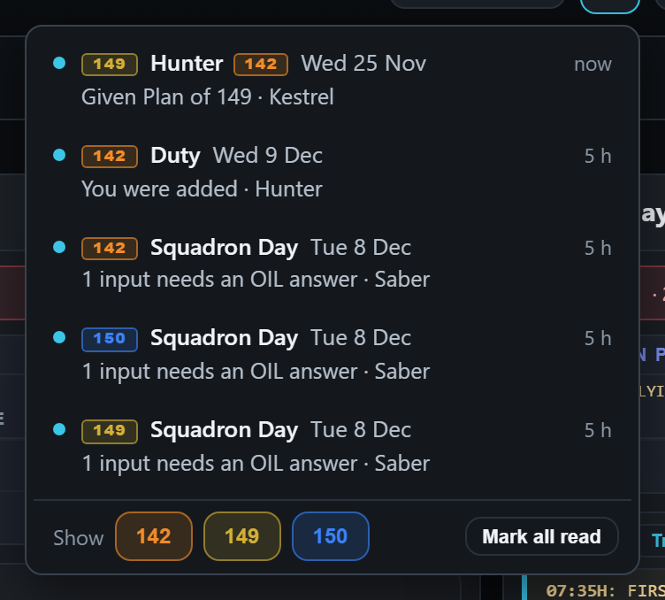
Drawn, desktop: each line's number wears its squadron's colour, the same colour as that squadron's Show button. The unread dot stays blue on every line.
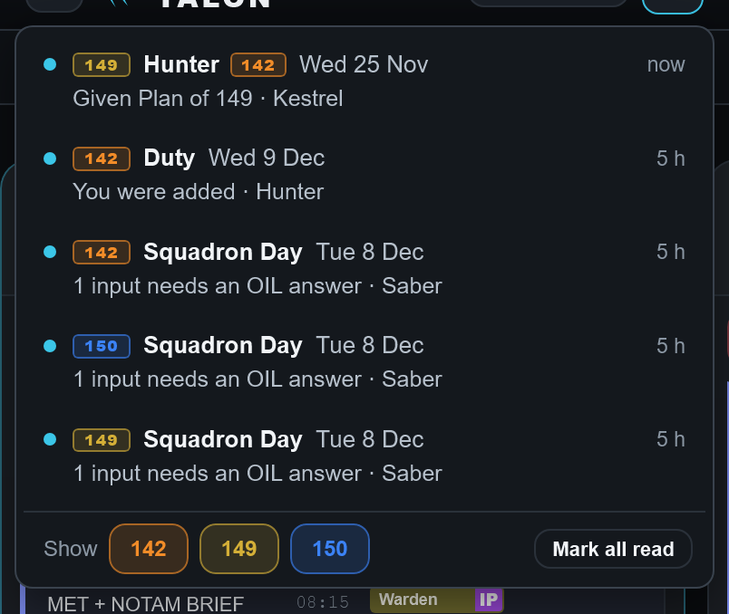
Drawn, phone.
 Drawn: once read, the number keeps its colour, so a read line still says whose it is.
Drawn: once read, the number keeps its colour, so a read line still says whose it is.
Ruled: the colours themselves need no answer. The colours shown (142 orange, 149 gold, 150 blue) are only where each squadron starts; N2 is how each admin changes them.
One thing I read into your answer:
a. A man's home number wears its colour too. The top line of the first picture: "149 · Hunter 142 · Given Plan of 149". The first number says the line is 149's; the "142" after Hunter's name says he is a 142 man. I would build: both wear their squadron's colour, 149 gold and 142 orange, as drawn. The other way: only the first number is coloured and the one after his name stays grey.
↑ The list
N2. Admin → Display: pick your own squadron colours new
As drawn, with the five readings below as recommended.
When: once, the first time an admin wants 149 to stand out on his bell; again only if he changes his mind.
 Drawn, desktop: a new page under Admin, Display. Its first section, "Squadron colours": each squadron's number and its colour; press one to open a colour slider and a brightness slider, with Save and Reset. Below, a preview of your own bell.
Drawn, desktop: a new page under Admin, Display. Its first section, "Squadron colours": each squadron's number and its colour; press one to open a colour slider and a brightness slider, with Save and Reset. Below, a preview of your own bell.
 Drawn, phone: 149 opened.
Drawn, phone: 149 opened.
 Drawn: the slider moved; the preview changes as you slide, before Save.
Drawn: the slider moved; the preview changes as you slide, before Save.
As you said, the page will grow: "Squadron colours" is its first section, and later settings join as sections of their own.
Five things I read into your answer, each drawn as I recommend:
a. Your colours are yours alone. Hunter makes 149 green; Kestrel still sees 149 gold. I would build: yes, saved with each admin's own sign-in, as you said "each admin can pick their own".
b. Until you pick, each squadron starts on a colour of its own. A new squadron 151 arrives already a colour none of the others has. I would build: yes, no two alike.
c. "Show the mockup to the user". Hunter slides 149 towards green and wants to see it before he saves. I would build: the preview on the Display page: his own bell, drawn as it will look.
d. A colour too dark or too pale to read. Hunter drags brightness right down and 149's number would vanish into the dark background. I would build: the brightness slider stops just before that point, so nothing has to be refused or warned about after he chooses.
e. Who sees the squadron colours. Ranger, a member, sees one squadron on his bell and has nothing to colour. I would build: only those whose bell can show more than one squadron (admins, Plan holders, master admins) see this section.
↑ The list
N3. Admin → Users: who from outside plans or views 149, and who is moving new
One block at the top, then Incoming and Outgoing, then 149's own people.
When: Kestrel, 149's admin, at his desk every few weeks, or the day a new commander asks "who else can change our schedule?". Today the answer is scattered: Hunter sits among 149's own people, and anyone who only views 149 is hidden inside the folded 142 heading.
Changed since. You then ruled a new order: your own people first, then Outgoing, Incoming and "From other squadrons", each folding, with one search at the top. So the block is no longer at the top, and reading a below gives way to that. N13 draws the new page. See N13 ↓
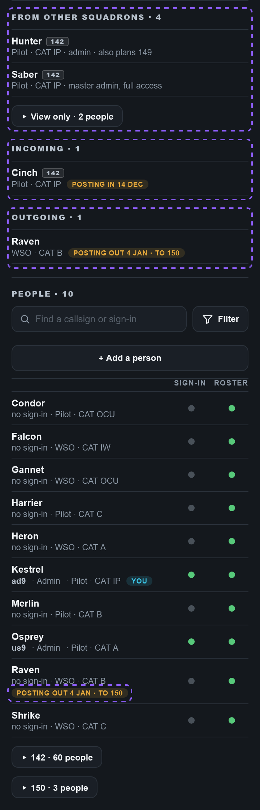
Drawn, phone: Kestrel opens Admin → Users on 149. At the top, "From other squadrons · 4": Hunter (142), who plans 149; Saber (142), a master admin with full access; "View only · 2 people", folded. Then "Incoming · 1", Cinch joining from 142 on 14 Dec, and "Outgoing · 1", Raven leaving for 150 on 4 Jan.
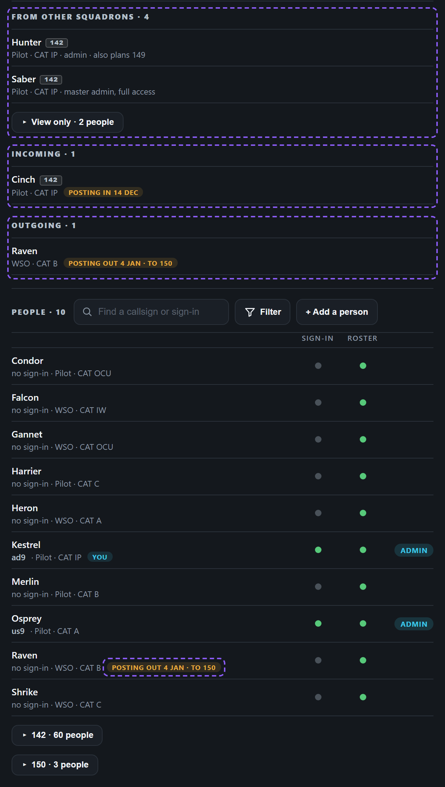
Drawn, desktop: the whole page. Under the three new groups, "People · 10" as before, then 142 and 150 folded.
You asked for two things: to know at one look who from outside has control or view of your schedule, and Incoming and Outgoing as two groups. Both are drawn. To end someone's access, Kestrel presses his row; it opens as any short row does, with 149's None · View · Plan line. None, then Save.
Eight things I read into your words, each drawn as I recommend unless it says otherwise:
a. "One look" is a block on the page you already use. Kestrel opens Admin → Users on 149 and the answer is the first thing on it, above "People". I would build: a block at the top of each squadron's own page, not a new page. The search box moves down by its height; on a phone it is still on the first screen. With nobody from outside, the block is one grey line: "Nobody from another squadron plans or views 142."
b. Plan holders are named; people who only view are one folded line. Hunter can change 149's schedule, so he has a row. Bolt and Mako can only look, so they are inside "View only · 2 people" until Kestrel opens it. I would build: as drawn. The few who can change your schedule are never hidden behind a count.
c. A master admin stands in the block too. Saber, home 142, can change 149's schedule because he is a master admin. Kestrel cannot end that. I would build: Saber's row is in the block, reading "master admin, full access", so the block names everyone who can change 149, though Kestrel cannot change Saber's.
d. Hunter moves out of 149's own list. In round 5 Hunter, a 142 man with Plan of 149, sat among 149's ten people (E9, g). I would build: he is in the block and in 142's folded group, and "People" lists only 149's own. This changes what E9 g said; E9 g now says the same.
e. The role in words. Your "the personnel should also show the role it holds". On 149's page, Hunter's short row reads "Pilot · CAT IP · admin · also plans 149". I would build: another squadron's short row adds "admin", or "master admin, full access". A member adds nothing, and a man with no sign-in has no role. You earlier ruled that such a row shows no role; this puts it back as a word, never as something to change.
f. What Incoming and Outgoing show. Raven is posted from 149 to 150 on 4 Jan. Until then he is under "Outgoing", and his own row in "People" wears the same amber tag: "posting out 4 Jan · to 150". I would build: Incoming lists men posted to this squadron and not yet arrived; Outgoing lists this squadron's men with a posting out ahead. The date is on the app's own amber posting tag, the one a waiting posting shows today; "to 150" is the new part. On the day, he leaves both groups.
g. Postings that are not to another squadron. Not drawn. Merlin is posted out to an overseas squadron on 1 Feb; Jester, archived, is restored with a post-in date next week. I would build: Merlin is listed under Outgoing with the tag the app shows today ("posting out 1 Feb · Overseas Sqn"), and so are a posting to SANS and to Delete. Jester is listed under Incoming until his date. The other way: the two groups hold only moves between squadrons.
h. The order of squadrons. Cannot be seen in these pictures. Saber, home 142, looks at 150's page: the folded headings read 142, then 149. I would build: wherever squadrons are listed, your home squadron first, then the rest by number. From 149 the other two are 142 and 150 either way, so no picture here shows it.
The wording "also plans 149" is the app's own today, kept so the block, a search and the folded group all say it the same way.
Recommended: as drawn.
↑ The list
N4. Inside a folded squadron: no grey number on each row new
The heading already says whose they are.
When: Kestrel opens "142 · 60 people" to give one of them View of 149.
Changed since. In the new order the folded squadrons sit at the page's foot (N13 c). This item is unchanged. See N13 ↓
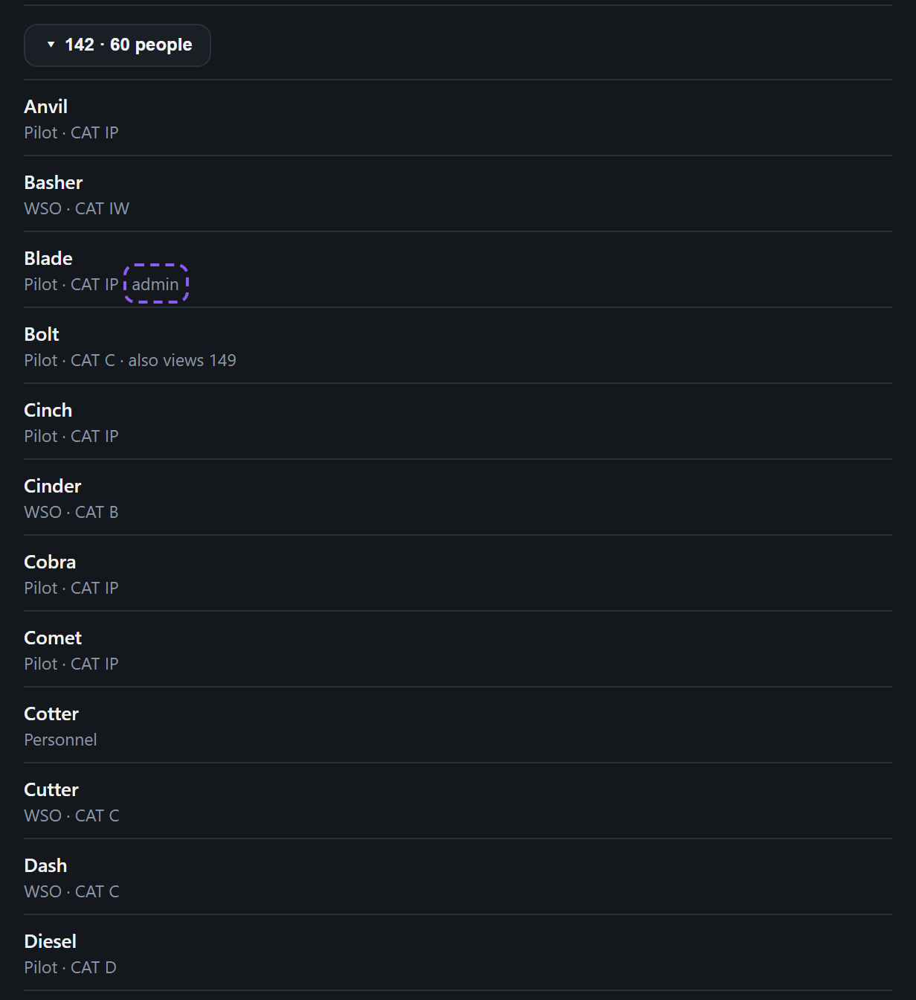
Drawn: sixty short rows, none wearing "142". Blade's row says "admin" (ringed). Bolt's says "also views 149".
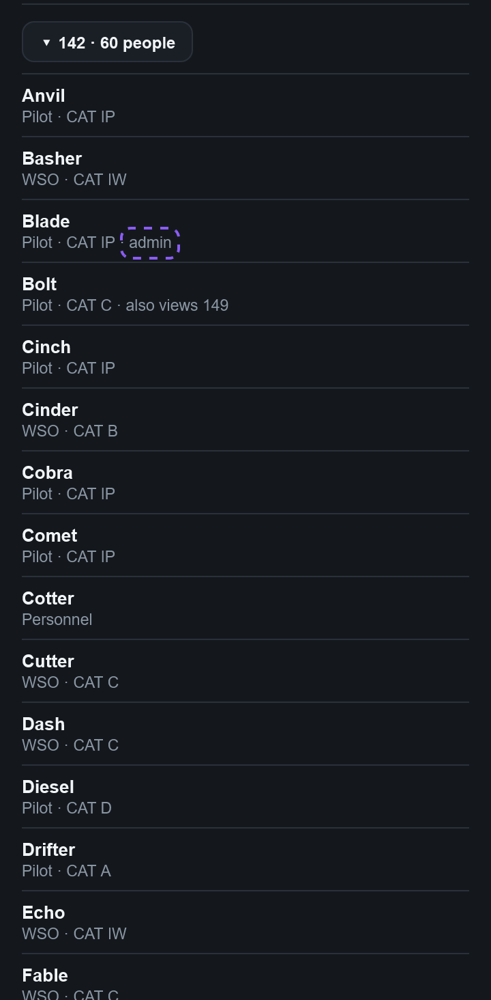
Drawn, phone.
The grey number still shows wherever a man of another squadron is found outside his own heading: in the block at the top, and in a search.
Recommended: as drawn.
a. Someone in the block is in his squadron's group as well. Hunter is named in "From other squadrons". The heading says "142 · 60 people". I would build: the group shows all 60, Hunter among them, so the count and the rows agree. He appears twice on 149's page: once in the block, once under 142.
↑ The list
N5. E8 drawn as recommended: the tick goes, "Edit on 142 →" takes you across new
The squadron picked stands open, the others fold, for everyone; the link is the one way across.
When: Saber, a master admin, is working on 149's page and needs to change a 142 man's role or sign-in.
E8 is still yours to answer. This is what it looks like if you take the recommendation, now with N3's block and N4's rows.
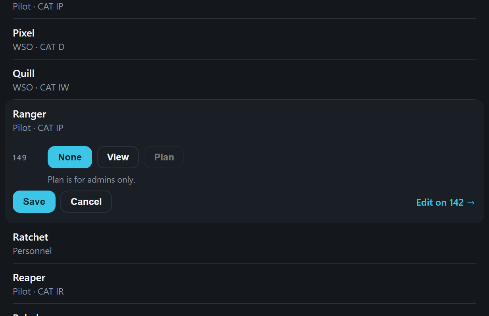
Drawn, desktop: Ranger's short row opened: his 149 line, Save and Cancel, and "Edit on 142 →" at the right. Only someone who is 142's admin sees the link.
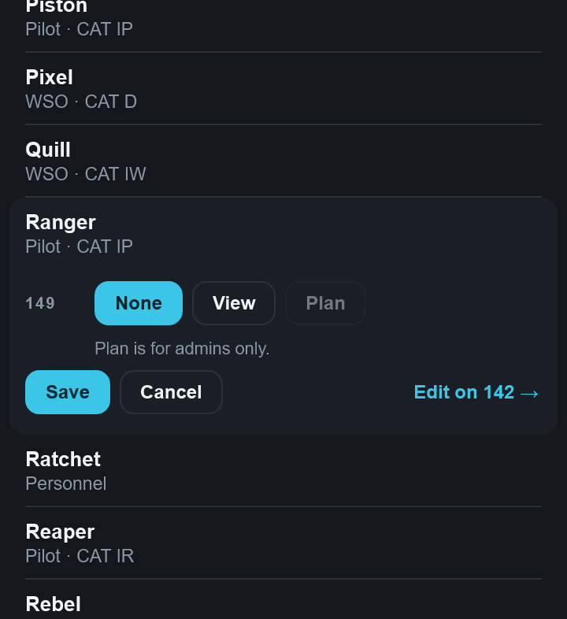
Drawn, phone.
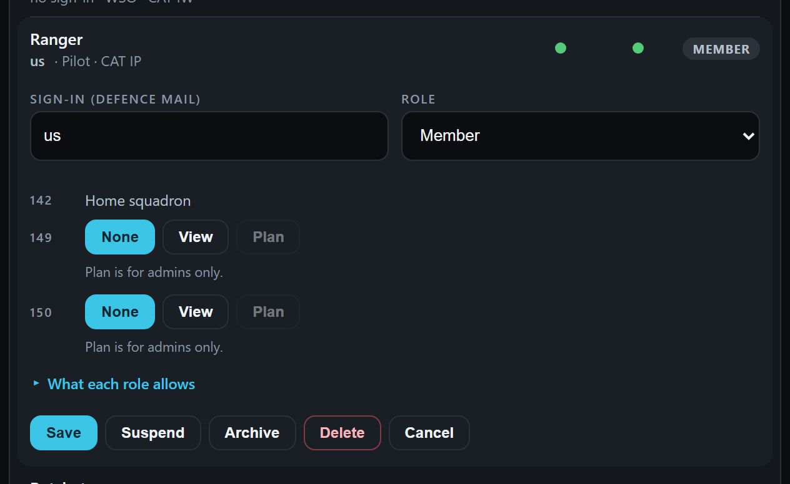
Drawn in round 5, unchanged: one press picks 142 and opens Ranger's full row there. While a window is open, the guard rail refuses it as any pick. (With N6, that row would also carry "Post out…".)
Recommended: as drawn.
↑ The list
N6. "Post out…" on Admin → Users new
On the man's own squadron's page; it opens the Leave War's own posting sheet.
When: a few times a year. Cinch, a 142 pilot, is posted to 149 from 14 Dec. Hunter is 142's admin. You ruled that Admin → Users carries postings too; this part is built later, with the transfer work.
Changed since. The posting sheet is redesigned (N12). If you take C, "Post out…" turns Cinch's opened row into the form instead of opening the Leave War's sheet, and reading a below gives way to N12 c. See N12 ↓
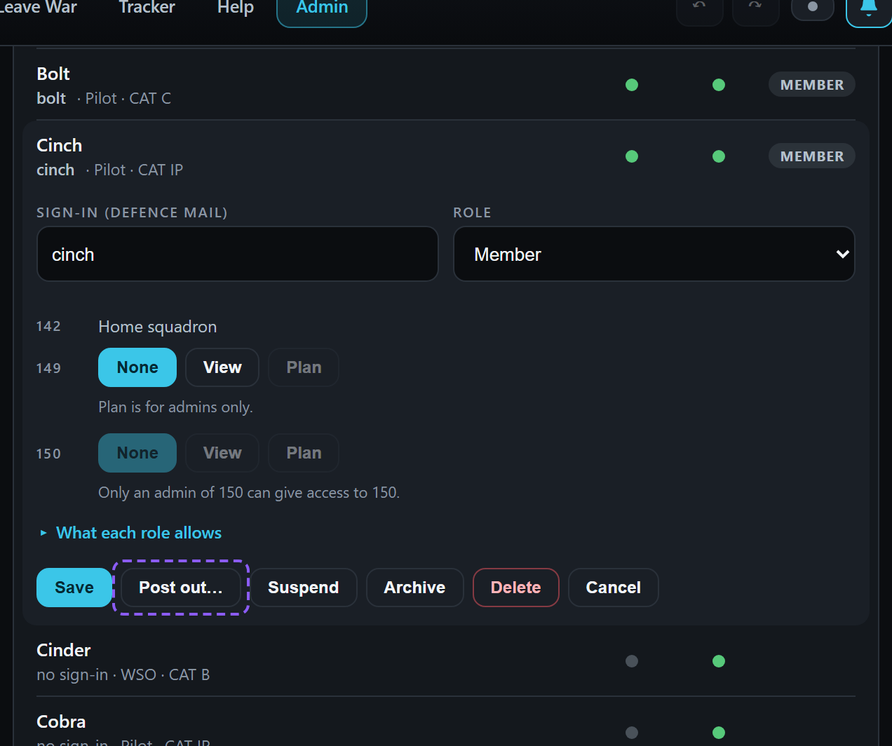
Drawn: Cinch's row on 142: "Post out…" between Save and Suspend, the same size, on one line.
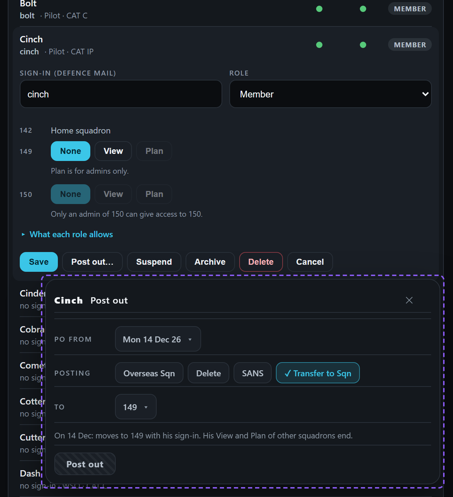
Drawn: the sheet it opens: the Leave War's own posting choices, Transfer to Sqn chosen, "To 149", from Mon 14 Dec 26. Its line: "On 14 Dec: moves to 149 with his sign-in."
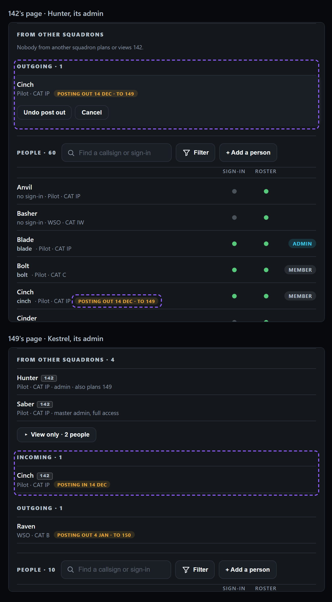
Drawn: until 14 Dec he shows on both pages: Outgoing on 142's, opened to "Undo post out" and Cancel; Incoming on 149's, where Kestrel sees him coming but cannot change it.
Five things I read into your words, each drawn as I recommend:
a. Where the button is, and what it opens. Hunter opens Cinch's row on 142's page. I would build: "Post out…" on a man's row on his own squadron's page only, between Save and Suspend. It opens the posting part of the Leave War's sheet: the date, the four kinds of posting, and "Post out". The leave parts of that sheet are left out here.
b. The new "To" line. Hunter presses "Transfer to Sqn". A line "To" appears under it with the other squadrons; he picks 149. I would build: a small drop-down, as in this picture and in N9's, in the app's own drop-down look (N10). Buttons side by side, "149" and "150", would match the posting choices above them, but would wrap onto several lines once there are five or more squadrons; a drop-down still fits.
c. What the sheet's one line says. Cinch holds no View or Plan, so his line is "On 14 Dec: moves to 149 with his sign-in." Bolt, who holds View of 149, would read "On 14 Dec: moves to 150 with his sign-in. His View of 149 ends." I would build: the second sentence only for a man who holds View or Plan of another squadron, naming what ends (you ruled that these end when he moves). The line says nothing about his leave or OIL: what happens to those at a move is settled with the transfer work.
d. Taking a posting back. 142 posted Cinch by mistake. Hunter opens Cinch's row under "Outgoing" and presses "Undo post out". I would build: the button is inside the opened row, not on its face. A live button on a list that scrolls under a thumb is easy to press by mistake, and on a phone it did not fit. "Cancel" beside it only closes the row, as on every row of this page.
e. Who can change a posting. Kestrel sees Cinch under "Incoming" on 149's page and thinks the date is wrong. I would build: only the squadron he is leaving can change or undo it, so Kestrel's Incoming row has no buttons. He phones Hunter, or with N7 asks from the app.
Recommended: as drawn.
↑ The list
N7. "Ask 142 to post him to 149" my idea · needs your word
The squadron that wants him asks; 142's admin does the posting.
When: a few times a year. Kestrel learns Cinch is coming to 149, but 142 has not posted him yet. A man is posted out by his own squadron's admins, so 149 cannot move him by itself.
You have not asked for this. It is my idea, from the pattern you chose for an archived callsign (D8): the other squadron asks, the man's own admin acts. Without it, Kestrel phones Hunter.
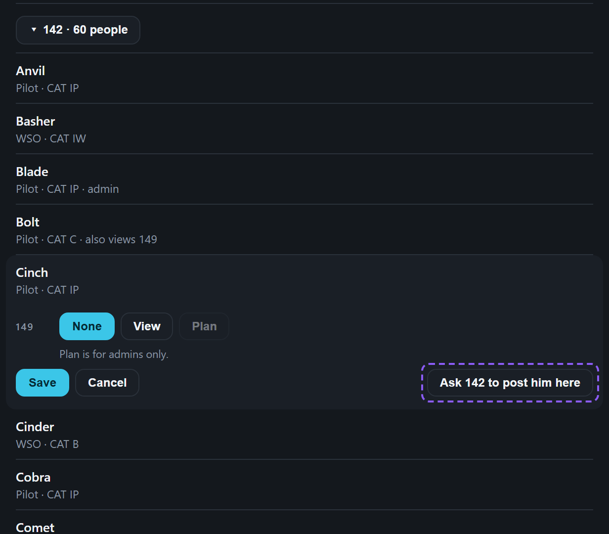
Drawn: Kestrel opens 142's Cinch on 149's page: "Ask 142 to post him to 149", where "Edit on 142 →" stands for someone who is 142's admin. One or the other, never both.
The button, close up.
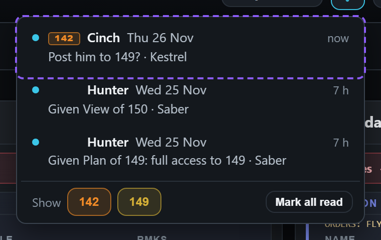
Drawn: the line 142's admins get: "Cinch · Post him to 149? · Kestrel". (This picture still has the numbers in last round's plain look; with N1 they wear their colours, as on N9's bell.)
Recommended: yes, as drawn.
If yes, three things not drawn yet, each drawn before it is built:
a. What the bell line opens. Hunter taps "Cinch · Post him to 149?". I would build: 142's Admin → Users with Cinch's row open, "Post out…" one press away. Nothing is posted until Hunter does it.
b. What Kestrel sees after asking. Kestrel presses the button and wonders whether it went. I would build: a passing note, "Asked 142's admins to post Cinch to 149.", the same shape as N9's. Cinch appears under 149's "Incoming" only once 142 has posted him.
c. The button on a phone. On a phone the button does not fit beside Save and Cancel. I would build: it goes on a line of its own under them.
↑ The list
N8. D2 on a phone: the fade waits until the ☰ menu has closed new
As you ruled: both flashes are seen.
When: Saber, on his phone, picks 150 from the ☰ menu. The menu stays open after a pick, so today the fade plays behind it and he sees one flash at most.
Drawn: a film of the real app on a phone. He picks 150, taps beside the menu to close it, and only then the number above TALON dims and comes back twice. The white dot shows where a finger taps; it is only there to follow the film.
Phone: the fade after the menu closes (ringed).
Phone, less motion on: white for a second, then grey, also after the menu closes.
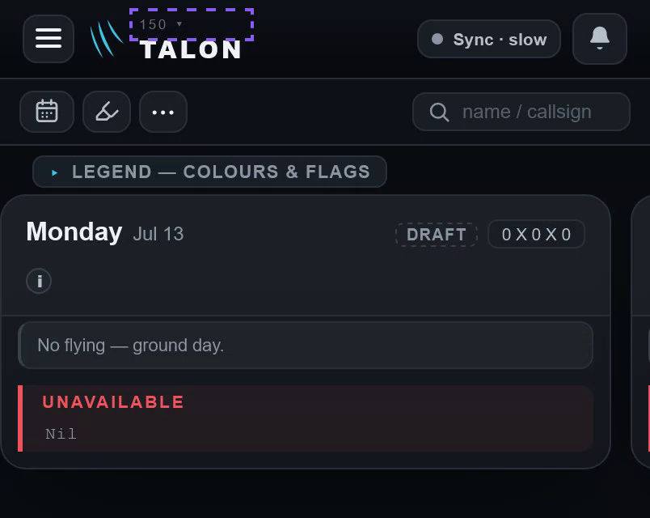
A still: the menu gone, 150 at its first dim.
A desktop is unchanged.
Recommended: as drawn.
a. Other times the number is covered. Not drawn. Saber, on his phone with the bell's list open over the top bar, presses a 149 line. The squadron changes behind the list. I would build: the same wait: the two fades play once the list has closed and the number is in sight.
↑ The list
N9. D8's "It's him", from start to end new
Kestrel answers "It's him"; 142's admin restores Jester and posts him to 149.
When: a few times a year. Kestrel adds a pilot on 149 and types "Jester". 142 has an archived Jester, and he is the same man. This comes with the transfer work; until then only "Someone new" and "ask 142's admin", as you ruled.
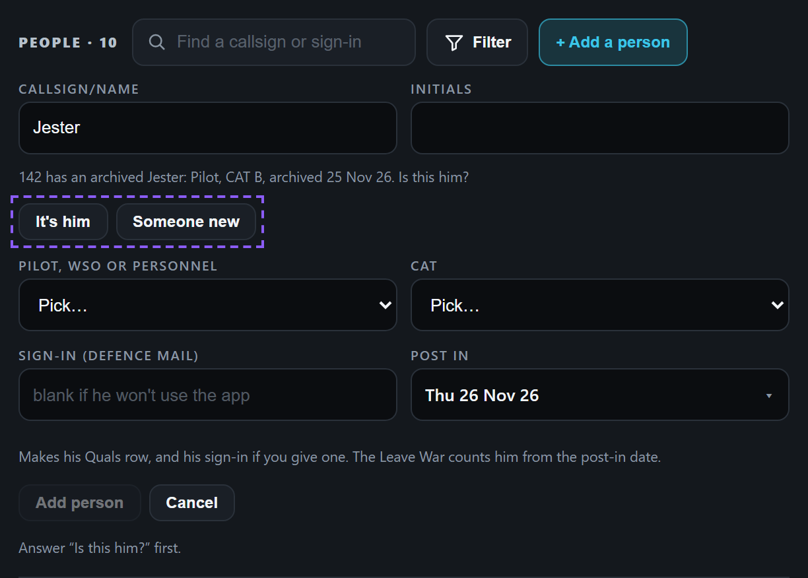
1. Drawn: the note now has two answers, "It's him" and "Someone new", the app's own pair. "Add person" stays greyed until he answers.
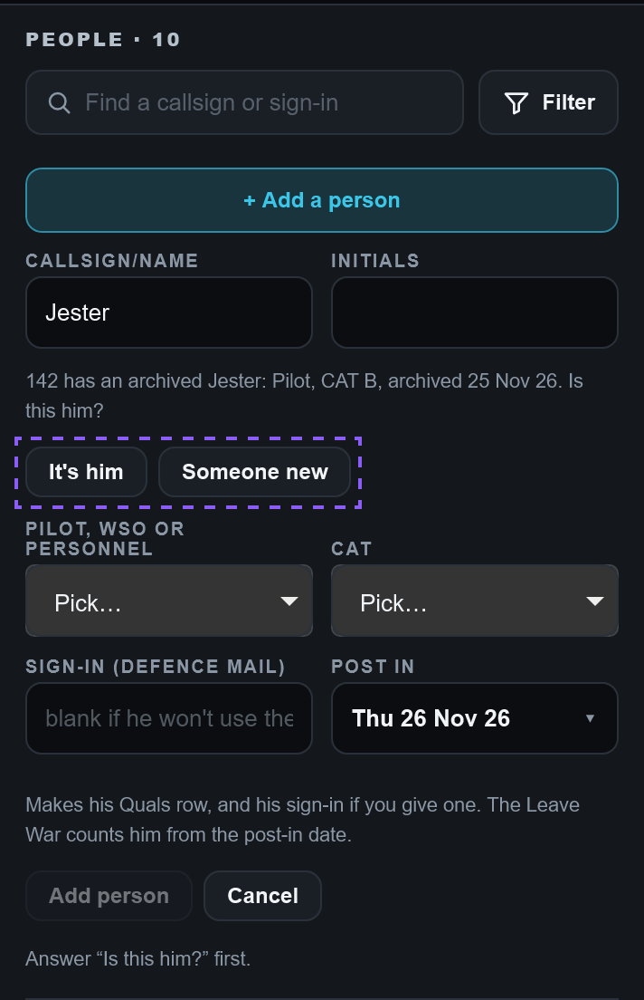
1. Drawn, phone.
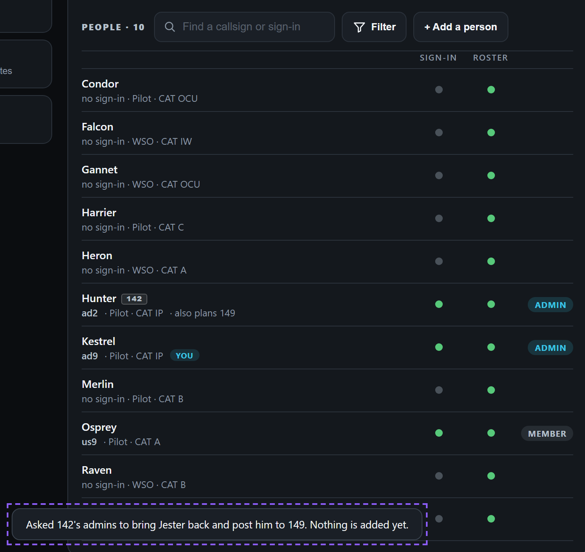
2. Drawn: after "It's him" the form folds shut and a passing note says "Asked 142's admins to restore Jester and post him to 149. Nothing is added yet." (The list behind it is round 5's: with N3, Hunter would be in the block, not in this list.)
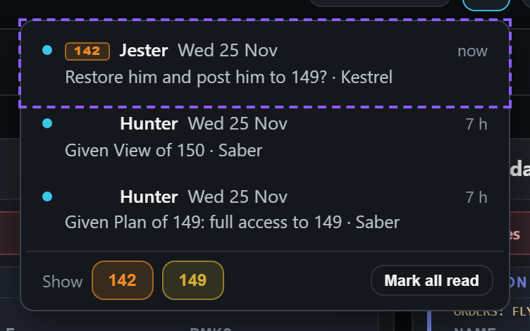
3. Drawn: the line on Hunter's bell (142's admin): "Jester · Restore him and post him to 149? · Kestrel".
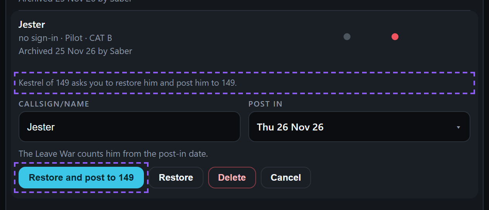
4. Drawn: a tap opens Jester's archived row on 142. Above its boxes: "Kestrel of 149 asks you to restore him and post him to 149." A new main button, "Restore and post to 149".
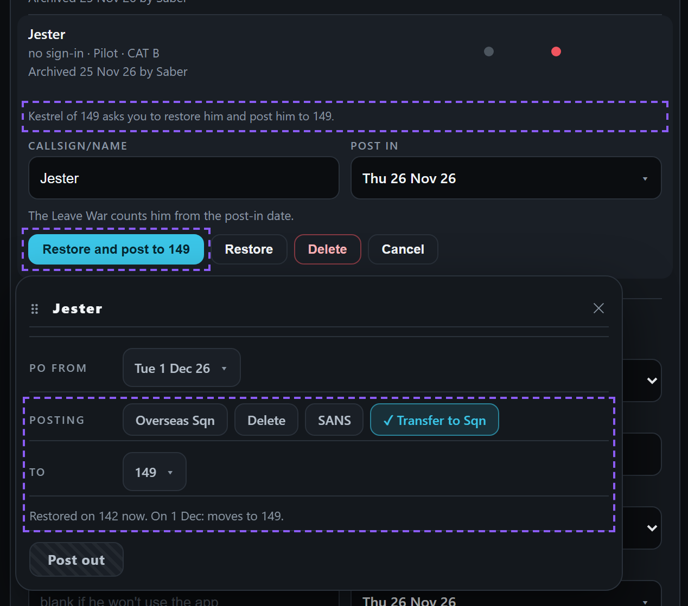
5. Drawn: the press opens the Leave War's own posting sheet, Transfer to Sqn chosen, "To 149". Its line: "Restored on 142 now. On 1 Dec: moves to 149." After "Post out" he shows in 142's Outgoing and 149's Incoming, as Cinch does in N6.
Five things I read into your words, each drawn as I recommend:
a. After "It's him", the form shuts. Kestrel presses "It's him" with "Jester" typed and a seat half picked. I would build: the form folds shut and empties, as its Cancel does, and the passing note says what was asked. Nothing is added to 149. A form left open would invite a second, wrong add of the same man.
b. The bell line. Hunter and Blade are 142's admins. Kestrel asks on Wed 25 Nov. I would build: both get the line. Its day is the day Kestrel asked, since the request is about no day of the schedule. It is worded as N7's line is: the question, then who asks.
c. Jester's archived row gets a fourth button. Hunter taps the line. Jester's row opens with "Restore and post to 149", "Restore", "Delete" and "Cancel". I would build: the new button is the row's one bright button while a request waits, and "Restore" takes the plain look. Hunter can still only restore him, or delete him. On a phone "Cancel" drops to a second line.
d. When he is restored. Hunter presses "Restore and post to 149", the sheet opens, and he closes it with ✕ without pressing "Post out". I would build: nothing has happened: Jester is still archived. The restore and the posting are made together by the sheet's "Post out", so he is never left restored on 142 with no posting. The sheet's line says both: "Restored on 142 now. On 1 Dec: moves to 149."
e. While Kestrel waits. Not drawn. Two days later Kestrel wonders whether 142 has acted. I would build: nothing shows on 149 until 142 posts him; then Jester is under 149's "Incoming" with his date. If 142 does nothing, Kestrel asks again or phones. The other way: a line on 149's page, "Asked 142 for Jester on 25 Nov", until it is answered.
Recommended: as drawn.
↑ The list
N10. D12 redrawn: the person lists in the app's own drop-down new
Answered: the lists stay as your phone shows them today.
You answered (26 Nov): "Actually I'm ok with what the aircrew lists shows currently. No need for an app version". On your iPhone these boxes open the phone's own dark list, which you are ok with; what looked ugly was round 5's drawing of a white list your phone never shows. Nothing below is built; a name from another squadron still reads "Hunter · 142" in the box.
When: every day. Hunter, planning 149's week, signs PLANNED BY; Kestrel files an input with "+ Input".
You were right that round 5's drawing was ugly, and it showed the app as it really is today: both boxes open the browser's own plain list (on your iPhone, the wheel at the foot of the screen). The pictures below use the app's own drop-down instead: the dark list the squadron menu already uses, with a tick on the chosen name.
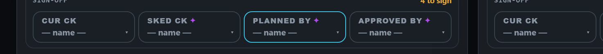
Today: the PLANNED BY box. Pressed, it opens the browser's own list, which a picture cannot hold.
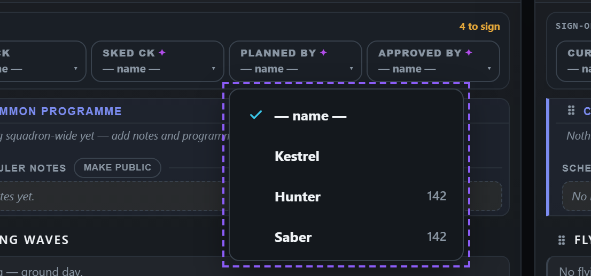
Drawn, recommended: "— name —" first, then 149's own Kestrel, then Hunter and Saber with "142" in grey at the right.
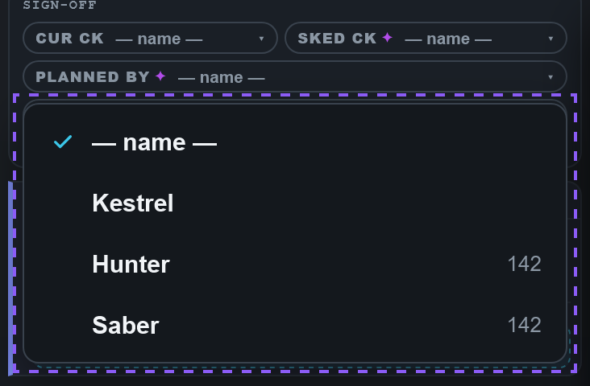
Drawn, phone.
 Drawn: after choosing, the box reads "Hunter · 142".
Drawn: after choosing, the box reads "Hunter · 142".
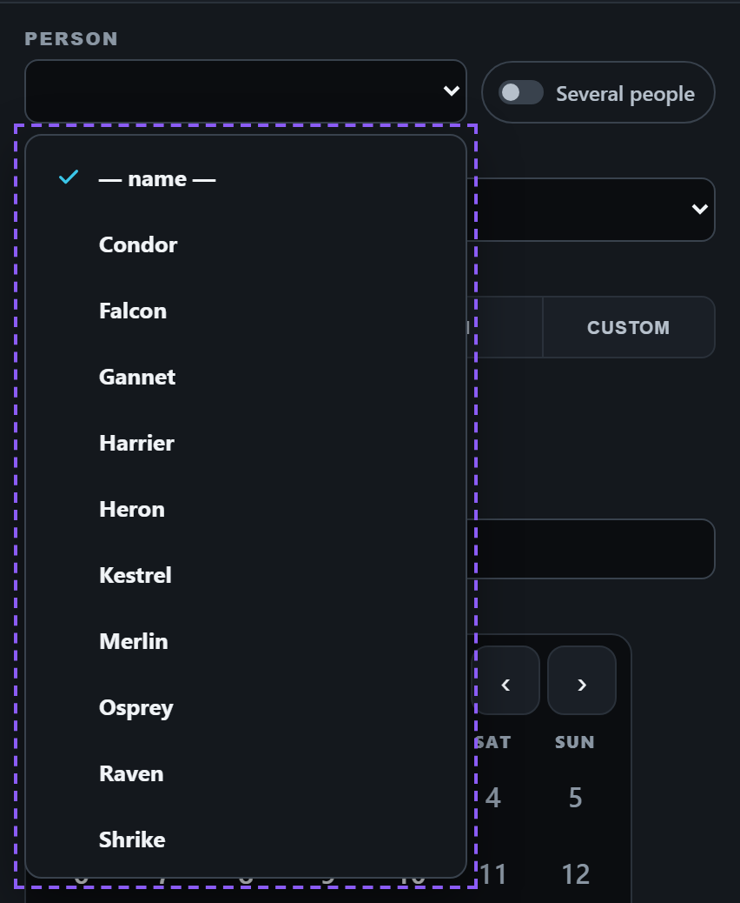
Drawn, recommended: "+ Input"'s Person list on 149: "— name —" first, then only 149's ten men, as you ruled.
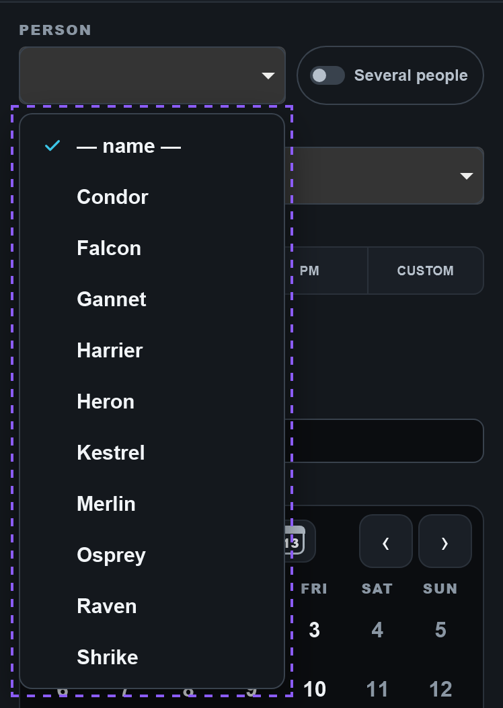
Drawn, phone.
Recommended: the app's own list in both boxes, as drawn. It also changes the boxes on your own squadron's pages, which use the same plain list today. It is new building work: today the browser draws these lists itself.
Two things I read into it:
a. The empty first line. Kestrel opens "+ Input" on 149. The Person box starts empty, as you ruled, and the list's first line is "— name —", ticked. I would build: "— name —" in both lists. It is what the sign-off boxes say today; the Person box has no empty line today.
b. Where the squadron number sits. Hunter signs 149's PLANNED BY. In the open list his line is "Hunter", with "142" in grey at the right; the closed box then reads "Hunter · 142". I would build: as drawn: the list lays the number as the squadron menu lays its grey word, and the box keeps round 5's "Hunter · 142".
↑ The list
N11. D1 redrawn: the form's buttons as the app's own pair redrawn
Your correction: "the cancel button is different in size and doesnt seemed to be aligned".
 Redrawn: "Add person" and "Cancel" the same size, on one line, measured from the app.
Redrawn: "Add person" and "Cancel" the same size, on one line, measured from the app.
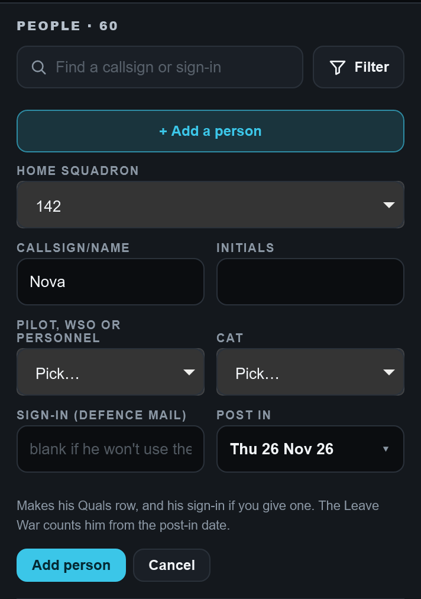
Redrawn, phone.
 Redrawn, phone: a name typed and 149 pressed: the "Blocked:" note at the foot, clear of the pair.
Redrawn, phone: a name typed and 149 pressed: the "Blocked:" note at the foot, clear of the pair.
D8's pictures were redrawn the same way. Every drawing from now on measures a pair of buttons from the app.
↑ The list
N12. The posting sheet, redesigned just added
One design for the Leave War and Admin → Users, as you asked. Three ways drawn; I recommend C.
When: a few times a year. Hunter, 142's admin, posts Cinch to 149 from 14 Dec. On the Leave War he presses Cinch's 14 Dec, then ⋯, then "Post out". On Admin → Users he opens Cinch's row and presses "Post out…". You said: "can we redesign this post out page. Likewise for leave war. It's so ugly".
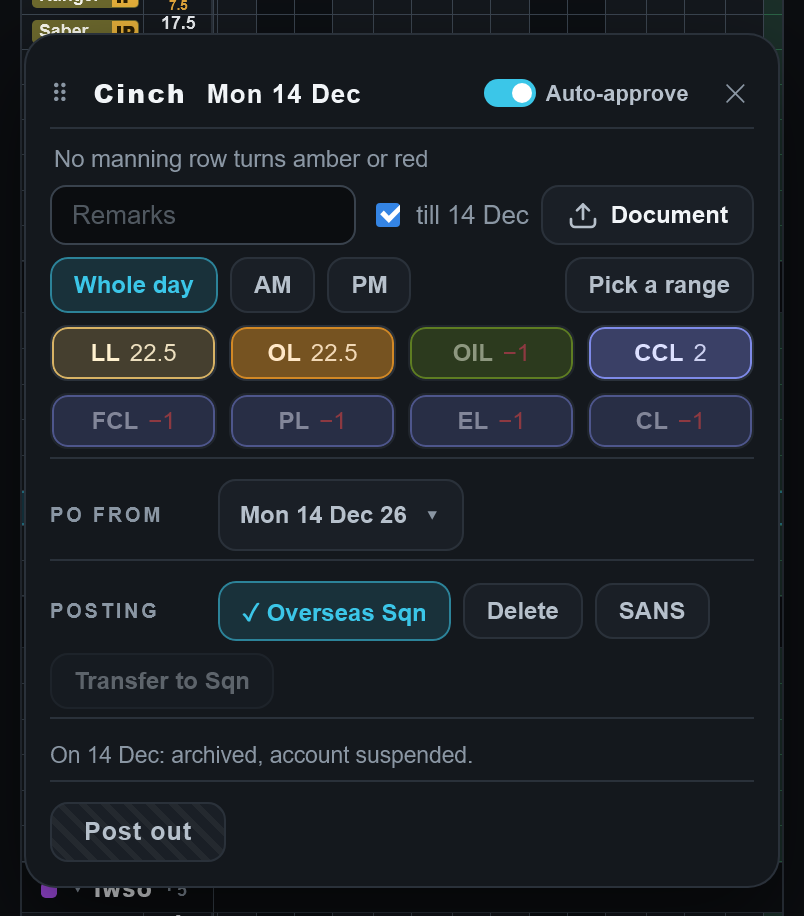
Today, phone: the posting sits under the leave buttons, which stay live. The head still names the day. "Transfer to Sqn" falls onto a line of its own, and "Post out" is a grey striped button that looks switched off.
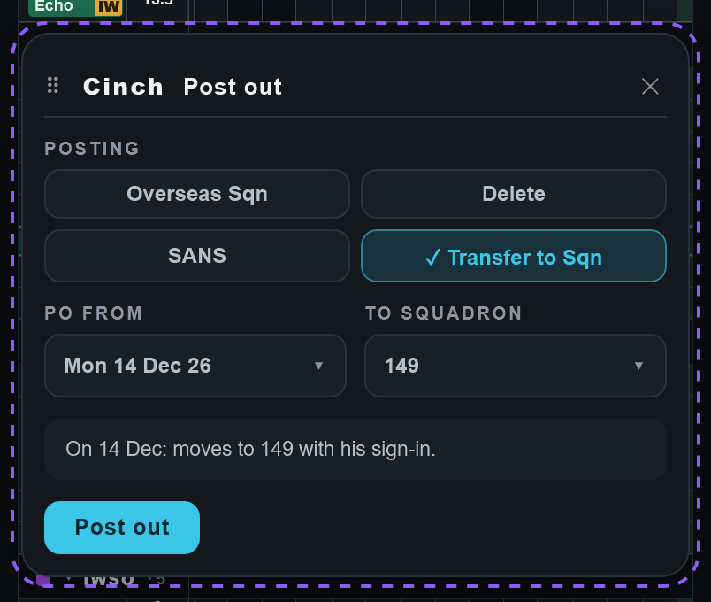
Drawn, C, phone: the sheet is the posting's alone. The four choices first, two by two. Then the date and "To squadron" side by side. The line saying what will happen sits just above a blue "Post out".
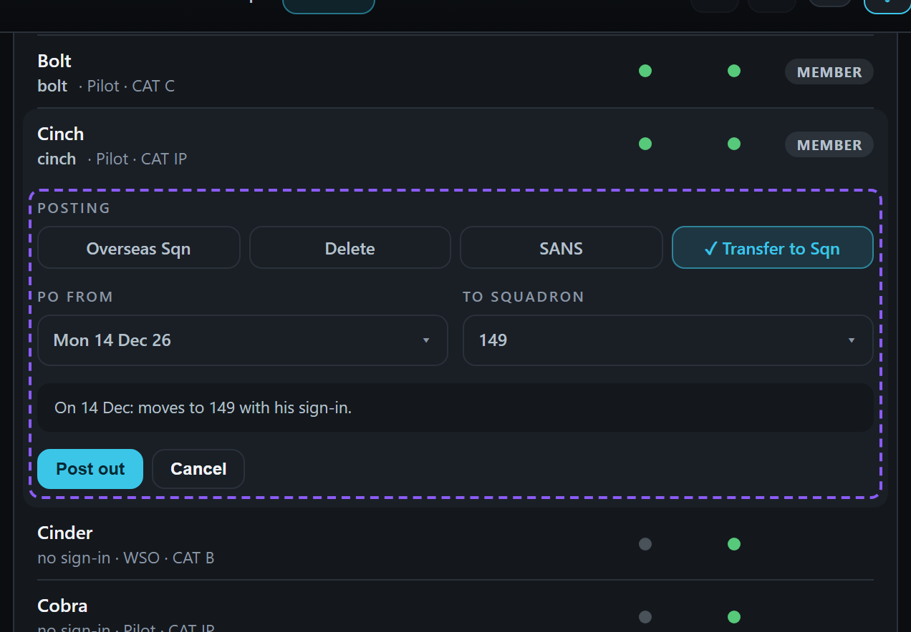
Drawn, C, Admin → Users, desktop: "Post out…" turns Cinch's opened row into the same form. No second window over the list; the row's own "Post out" and "Cancel" at its foot.
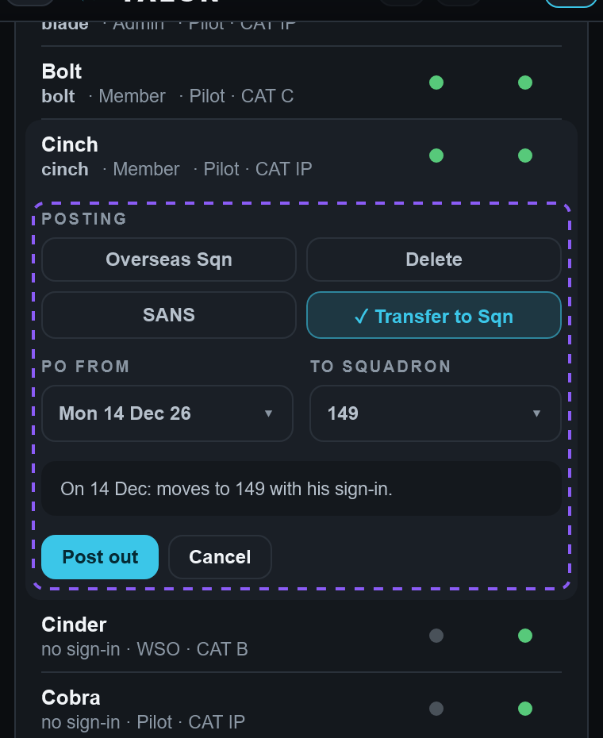
Drawn, C, Admin → Users, phone: the same form in the row.
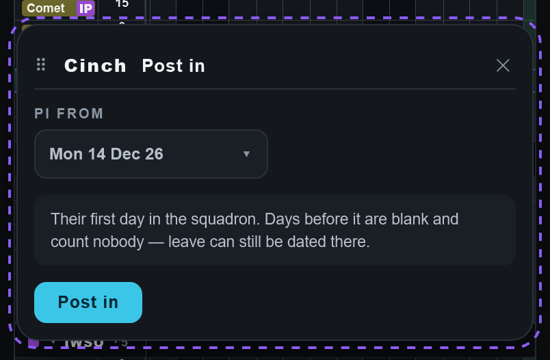
Drawn, C, Post in: the same shape. The date, the app's own note about the first day, a blue "Post in".
The other two ways I drew (A and B)
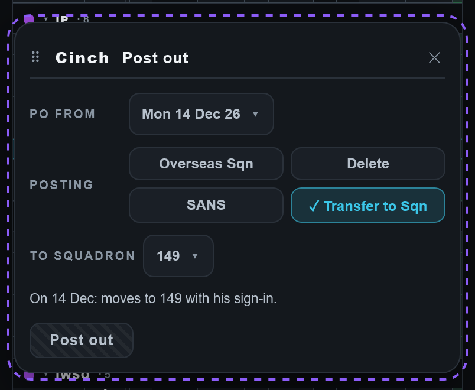
A, tidied: today's order and words, the leave buttons gone, the choices as one group. The grey striped button is kept. Changes least.
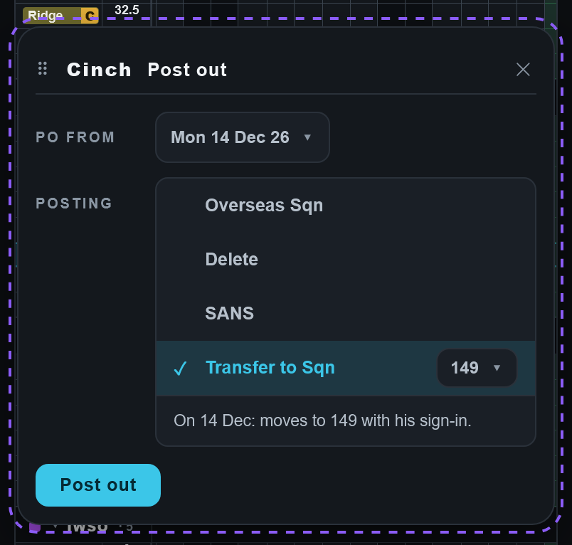
B, a list: the four choices as rows in one panel, the chosen one ticked, "149 ▾" at the end of the Transfer row. The tallest, and it undoes your "less words and space" for these four, which made them small buttons.
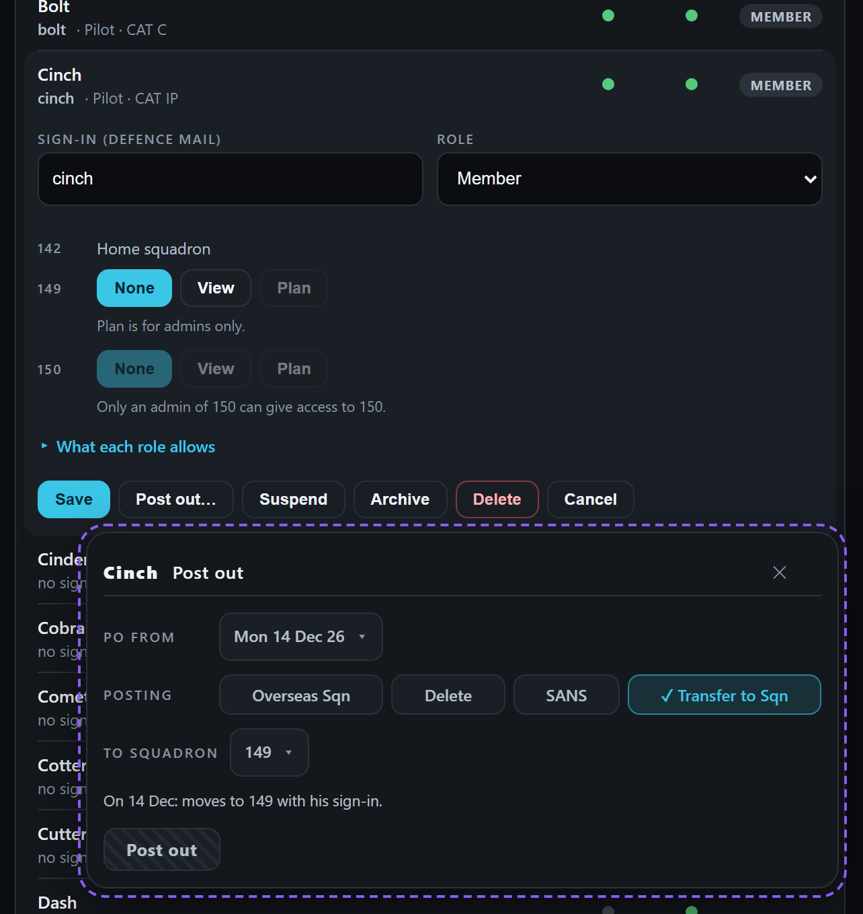
A on Admin → Users: a sheet hung under "Post out…", covering the next names.
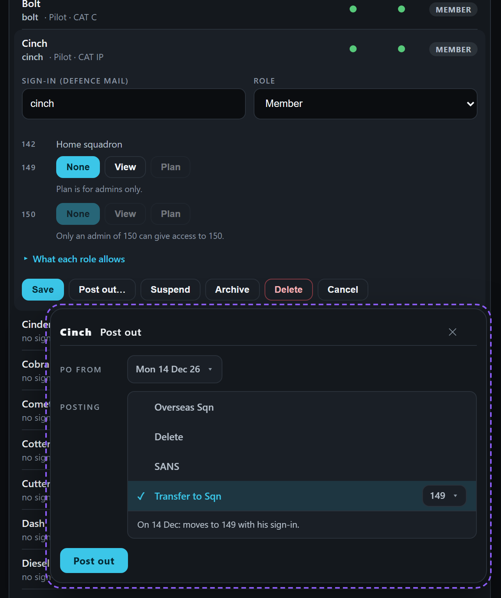
B on Admin → Users: the same, as a list.
Three questions for you:
a. Which design: A, B or C? Hunter posts Cinch to 149, on his phone. I would build: C. It reads at one glance on a phone and wastes no room at a desk: the choice first, the two facts it needs on one line, what will happen right above the button. It is also the only one where Admin → Users gets a form of its own, not a copy hung over the list.
b. "Post out" as the app's blue main button. In August you asked for Post out as a muted grey button, set apart from the coloured leave buttons. It sat among them then. I would build: blue, as drawn in B and C. It now sits on a sheet of its own as its one action, where grey striped reads as switched off. A keeps the grey.
c. On Admin → Users: the form inside the man's row. Hunter opens Cinch's row and presses "Post out…". I would build: the row itself turns into the form, made of the same parts as the Leave War's sheet, so the list stays in view. This replaces N6's "it opens the Leave War's own sheet".
Six things the new design decides that you have not ruled, each drawn as I recommend:
d. The leave buttons step aside while a posting is open. Hunter opens "Post out" on Cinch's 14 Dec. LL, OL, OIL and the rest are gone from the sheet. If he meant to file leave instead, he closes it with ✕ and presses the day again. I would build: as drawn. Today the leave buttons stay live just above the posting, and a slip of the thumb files leave.
e. The kind of posting first, then the date. Hunter first picks "Transfer to Sqn", then checks the date and picks 149 beside it. I would build: as drawn. The design you approved in August had the date first. With the choice first, "To squadron" can appear beside the date without moving anything below it.
f. The sheet's head names the act, not the day. Today the head reads "Cinch Mon 14 Dec". Drawn, it reads "Cinch Post out"; the day is the "PO from" box just under it. I would build: as drawn. In October you had the day in these heads made bigger and brighter, so this takes away something you asked to see better. But here the day can be changed in its box, and a day in the head would be wrong the moment he changes it. "Post out" is then written twice, in the head and on the button; on Admin → Users the form has no head, so it is said once there.
g. The buttons at the foot on Admin → Users are the row's own. In Cinch's row, "Post out" and "Cancel" are the same size as "Save" and "Cancel" on every opened row of that page, a little smaller than the Leave War's "Post out". I would build: as drawn: each page keeps its own button sizes.
h. The new box is labelled "To squadron", not "To". "PO from: Mon 14 Dec 26", and beside it "To squadron: 149". I would build: "To squadron", on every sheet that sends a man to another squadron. Beside a date, a bare "To" reads as the end of a date range ("from 14 Dec to …"). N6's and N9's older pictures still say "To"; they change when redrawn.
i. "PO from" on Admin → Users too. An admin who never opens the Leave War meets "PO FROM" for the first time in Cinch's row. That page's own form spells it out: "Post in". I would build: "PO from" on both, as you asked for one design for both pages; the button under it says "Post out" in full.
Not drawn yet in the new look, to draw before the build: the "Delete Cinch?" card, the line when the last admin cannot be posted, a posting already made ("Undo post out"), the posting from a dragged range, a ground-crew man's three choices, and the opened "To" list (your phone's own list). N6's sheet and N9's "It's him" sheet would be redrawn in this design.
Recommended: C, as drawn, with "To squadron".
↑ The list
N13. Admin → Users: your order, the folds, and a way to jump to each heading just added
Your own people first, then Outgoing, Incoming and "From other squadrons", each folding. A list of the headings to jump to. Two ways drawn; I recommend A.
When: every time an admin opens Admin → Users. On 142, with 60 people, "From other squadrons" now sits under all sixty, about three and a half screens down. The jumps, with their counts on the first screen, give back your "one look" at who from outside has control.
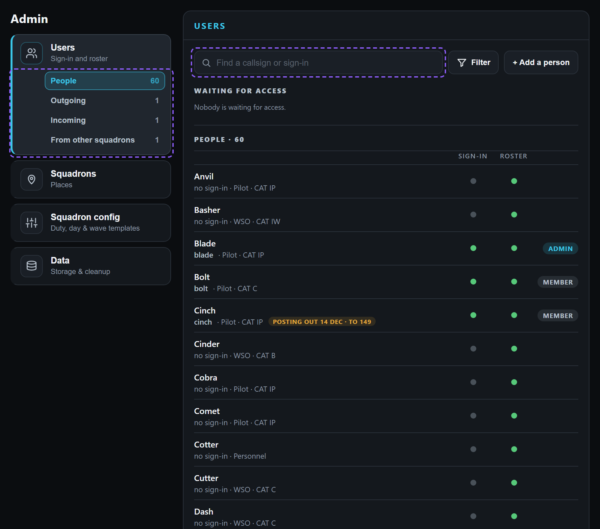
Drawn, A, desktop: Hunter on 142. The search, Filter and "+ Add a person" in one row at the very top. Under "Users" in the left column: People 60, Outgoing 1, Incoming 1, From other squadrons 1. The left column stays put as he scrolls; the group in view is lit.
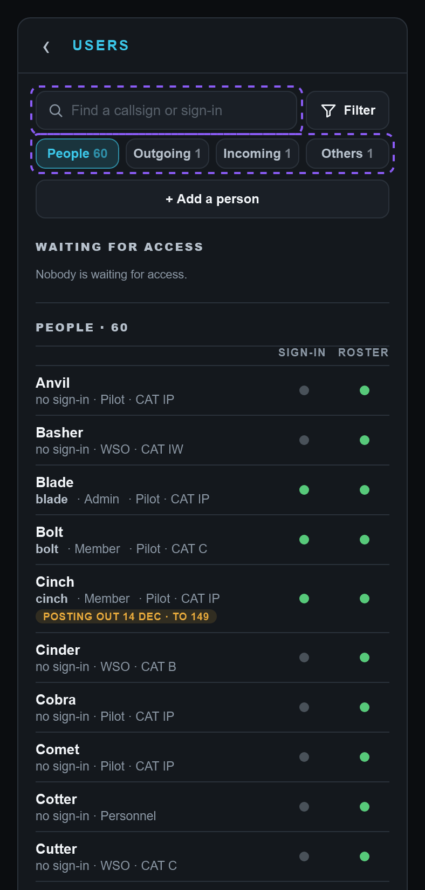
Drawn, phone: four jump buttons under the search. They stay pinned under the top bar with the search while the list scrolls.
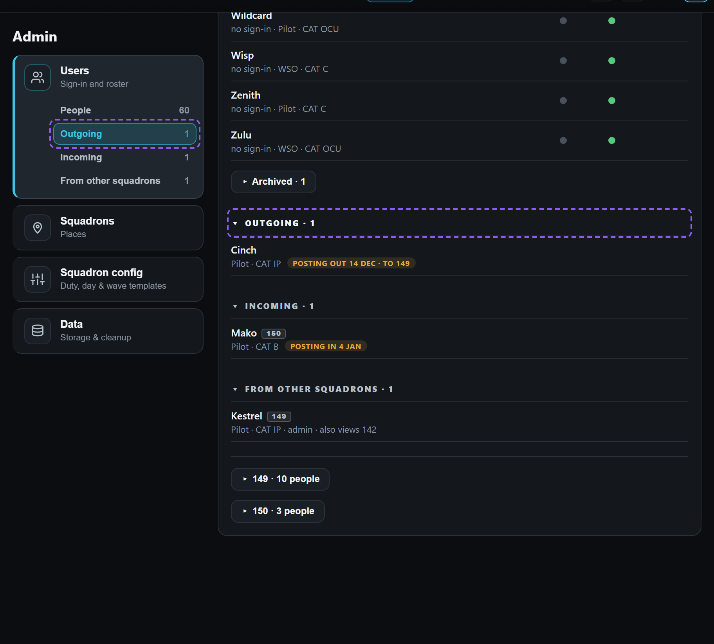
Drawn: "Outgoing" pressed. The page runs down to the heading. It cannot reach the top of the screen (the page ends), so the heading stands white for about a second, then goes back to grey.
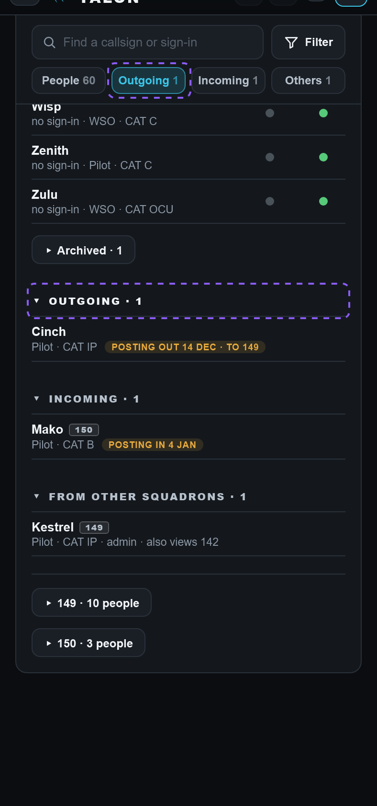
Drawn, phone: the same press on a phone.
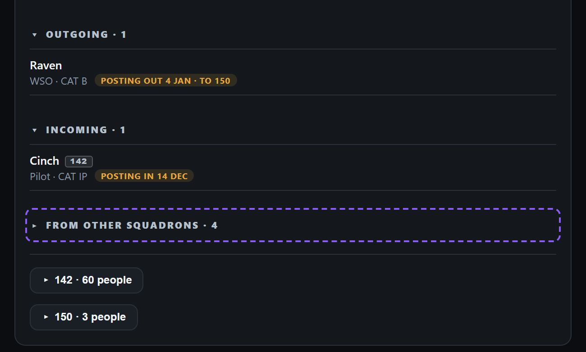
Drawn: Kestrel on 149 folds "From other squadrons". Its people are put away; the count stays on the heading.
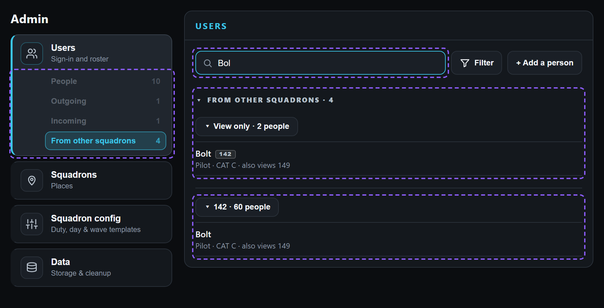
Drawn: Kestrel types "Bol". Groups with no match hide, and their jumps go grey without moving.
The other way I drew (B): the jump buttons on a desktop too
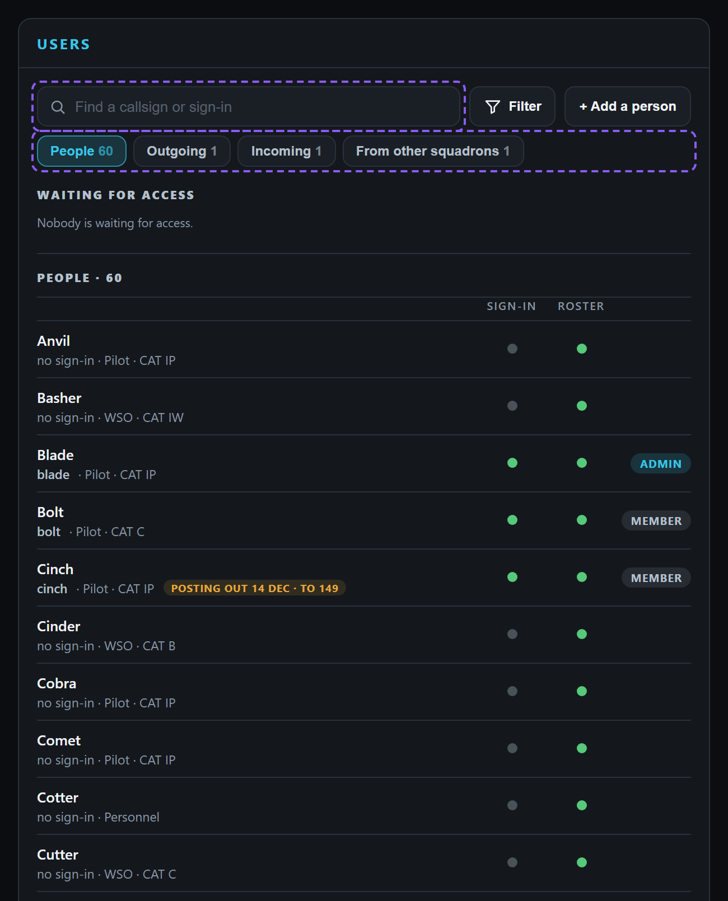
B, desktop: the phone's row of jumps, under the search, on a desktop too.
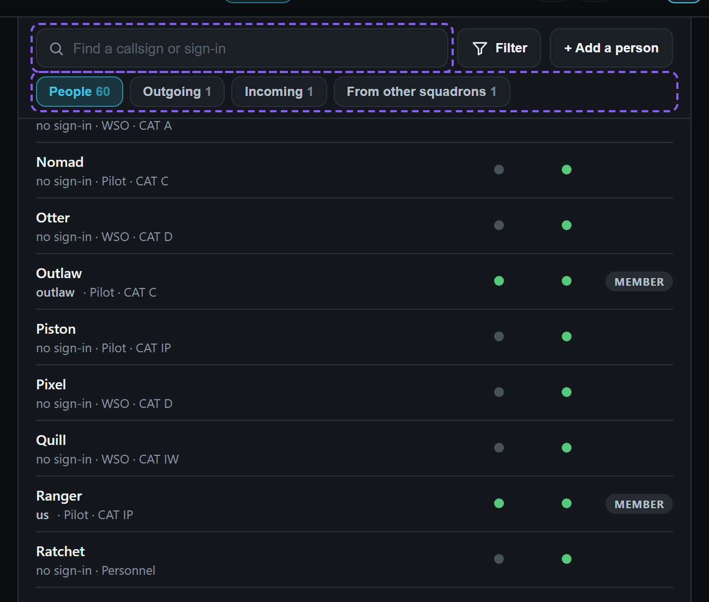
B, halfway down: the search and the jumps stay under the top bar. They take about a tenth of his screen for as long as he is on the page, and a lit "Outgoing 1" right under Filter can be read as "showing only Outgoing".
These pictures add two people on 142's page so that every group shows: Mako (150) posting in on 4 Jan, and Kestrel (149) able to view 142. N3's pictures showed nobody from outside on 142. Neither is real.
Your question, and one choice for you:
a. On a desktop, where the jumps live. Hunter, at his desk, wants to see who from outside can change 142. I would build: A: under "Users" in Admin's own left column, which then stays put while the page scrolls (it scrolls away today). It costs no height, sits apart from Filter, and lets him reach Squadrons or Data from far down any Admin page. On a phone there is no left column, so the row of jumps is the only way.
Things the new layout decides that you have not ruled, each drawn as I recommend:
b. The heading you jumped to stands white for a second. Hunter presses "Outgoing". The page ends before that heading reaches the top, so it stops a third of the way down; "OUTGOING · 1" is white for about a second, then grey again. I would build: as drawn. It is a new kind of mark, so it is yours to rule. Nothing glows or rings; with reduced motion on, the page jumps at once and the white still shows.
c. The folded other squadrons go to the very foot. On 149, "▸ 142 · 60 people" and "▸ 150 · 3 people" come after "From other squadrons", not straight under 149's own people. I would build: as drawn. You ruled them "under its own people"; with three groups now under the own people, the foot is the one place they do not split those groups.
d. A man in two groups shows once while searching. Kestrel types "Bol". Bolt, a 142 man who can view 149, matches under "View only" and again under "142 · 60 people"; the picture shows him twice, as I told you when you ruled the search. I would build: while searching, a man who holds View or Plan of 149 shows once, under "From other squadrons". Twice side by side looks like a fault.
e. An empty group is not shown. Once Cinch has joined 149 on 14 Dec, nobody else is posting in, so 149's page has no "Incoming" heading and no "Incoming" jump. "From other squadrons" always shows: empty, it reads "Nobody from another squadron plans or views 149." I would build: as drawn. "Waiting for access" has no jump: it is always at the top.
f. The phone's fourth jump reads "Others". The phone's row reads "People 60 · Outgoing 1 · Incoming 1 · Others 1". I would build: as drawn; the tap lands on the full heading, which explains it. "From other squadrons" does not fit four across a phone. A row that slides sideways was tried and dropped: it cut off this very group, the one you want at one look. The catch: the folded squadrons under that heading ("142 · 60 people") are "others" too, and "Others 4" does not count them.
g. On a phone the jumps are a second row under the search. The search and Filter on one row, the four jumps on the next, "+ Add a person" under them. I would build: as drawn. You ruled a page's controls one row; I read the jumps as the page's tabs, which that rule allows beside the one row.
h. Outgoing before Incoming, and the details of the folds. On 149: People, then Outgoing (Raven), then Incoming (Cinch), then "From other squadrons". Folded, a heading keeps its count: "▸ From other squadrons · 4". "View only" stays one folded line inside it, and the other squadrons stay folded. I would build: as drawn. Outgoing comes first because you wrote it first.
i. "+ Add a person" in the top row; its form opens there. Kestrel presses "+ Add a person". Its form opens under the top row, above "Waiting for access". The old "Add a person" block at the page's foot is gone. I would build: as drawn.
j. While searching, the counts stay whole. With "Bol" typed, the heading still reads "From other squadrons · 4", not "· 1". I would build: as drawn: the page does the same today ("People · 10" stays while searching).
k. "People" does not fold. On 142, sixty rows. A fold on "People" would put them away with one press, and the groups below would be in view. I would build: no fold on "People": you named three groups, and the jumps already take him past it.
Not drawn yet, to draw before the build: the run to a heading as a short film; "Nobody matches."; an empty "From other squadrons"; people waiting for access; the "+ Add a person" form opened at the top; a master admin's view; a phone narrower than yours, and a count of two figures ("Outgoing 12"). The four phone jumps are at their limit at your phone's width, so those two need a rule and a drawing before the build.
Recommended: A, as drawn.
↑ The list
Group E: questions
E1. The Calendar window when you pick another squadron
Closes by itself, unless a holiday or Every Monday is half done.
When this happens: Saber is in Inputs settings → Calendar on 142, marking flying days for December. He wants to check 149's, and picks 149 with the Calendar still open. A few times a month, at the desk.
Today: a press on a day is saved at once. But the window has two small forms that wait for their own Save: "Every Monday" and "Add a holiday", which has a box to type the holiday's name. Picking 149 closes the whole window with nothing said, and a holiday name typed and not yet saved is lost.
 Today: a holiday name typed, not saved, 142 in view.
Today: a holiday name typed, not saved, 142 in view.
 Today: 149 picked. The window is gone, and the name with it.
Today: 149 picked. The window is gone, and the name with it.
Recommended: the Calendar closes by itself at a pick, like the windows that only show things, because each day you press is already saved. But while one of its forms holds something not saved, the pick is refused with the grey note, as for any window with typing:
A new holiday half done: “Blocked: save or cancel the new holiday, then pick 149.”
A listed holiday opened and changed: “Blocked: save or cancel the changed holiday, then pick 149.”
Every Monday pressed, not saved: “Blocked: save or cancel “Every Monday”, then pick 149.”
A sheet of holidays read in, not yet added: “Blocked: add or cancel the sheet's holidays, then pick 149.”
A new holiday that no leave period covers yet: “Blocked: cancel the new holiday, or add its leave period, then pick 149.” Today the app keeps such a holiday and saves it by itself later, so "save" would not be true. This case is read from how the app is made, not yet pressed; it is pressed and drawn for you before it is built.
With the Calendar open on a page you are not looking at, the note names that page: Inputs, the SANS calendar or the Leave War. All these words are drafts. The double quote marks inside a grey note would be a first. None of these notes is drawn yet; each is drawn on the real app before it is built.
The other choices: refuse whenever the Calendar is open (one more press for nothing, most of the time); or always close it (a typed holiday name is lost, as today).
Changed at the earlier review: the settings window beside it. The Calendar opened from Inputs settings (or SANS settings) stands beside that settings window, which stays open. A settings window has a Save, so as planned it refuses a pick whenever it is open. So in the example above Saber would still get “Blocked: close the open window, then pick 149.”, close Inputs settings, and pick again. On a phone it is worse: the settings window lies under the Calendar where he cannot see it.
Recommended: a settings window with nothing changed since it was opened closes by itself too, with the Calendar; one with a change not saved refuses, and the note names it: “Blocked: save or cancel Inputs calendar settings, then pick 149.” (a draft). It is the same rule you gave for Admin → Users: a form counts once something is changed in it.
The other choice: a settings window always refuses, as planned. Then the Calendar closing by itself only helps when it was opened from the Leave War.
↑ The list
E2. The Tracker's marking window when you pick
Closes by itself, as today.
When this happens: Saber marks a student's sortie on 142's Tracker (a press on a ball opens the marking window), then opens the squadron list to look at 149. Several times a week.
Today: every press in the marking window is saved at once (Fails +, Fails −, a grade), and there is nothing to type. The one thing that waits: a "Done on" day picked for an event not yet done, which is kept only once a grade is given. The press on the squadron list closes the marking window, and the pick goes through.
 Today: the marking window open.
Today: the marking window open.
 Today: one press on the squadron list closes it and opens the list.
Today: one press on the squadron list closes it and opens the list.
Recommended: leave it as today: it closes by itself and the pick goes through. The only thing lost is a "Done on" day without a grade, which is one press to pick again.
The other choice: refuse the pick while a "Done on" day is waiting. It needs the Tracker to stop closing this window at a press on the squadron list, which is a change to how the Tracker's presses work.
↑ The list
E3. The chart editor left open at the member-view switch
It closes at the switch.
When this happens: Hunter (Plan of 149) opens "Edit chart layout" on 149's Tracker, looks, moves nothing, and presses his name badge to see the member view. Rare.
Today: nothing is asked. The member view comes up on 149, which has no Tracker tab, so the editor is out of sight. Back in the admin view, 149's Tracker still has the editor open.
 Today, 1: the editor open on 149 (its row of tools, "Move · Select · Connect…"), nothing moved.
Today, 1: the editor open on 149 (its row of tools, "Move · Select · Connect…"), nothing moved.
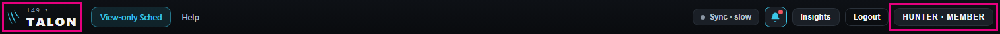
Today, 2: the member view on 149. No Tracker tab, so the editor cannot be seen.
 Today, 3: back in the admin view, the editor still open.
Today, 3: back in the admin view, the editor still open.
Recommended: the editor closes at the switch. Nothing was moved, so nothing is lost, and nothing is left open behind a switch you made. If something was moved, the question you already approved is asked (Save them / Discard them / Stay).
The other choice: leave it as today.
↑ The list
E4. A Tracker window hidden behind the Flow chart tab
The ones that only show close by themselves.
When this happens: Saber opens a student's Failures in the Tracker's Info panel, then makes the browser half his screen (or turns a tablet upright). The Tracker then shows one half at a time, the Flow chart, and the Failures window is out of sight behind the Info tab. He picks 149. Rare.
Today: nothing on screen says a window is open. The pick goes through and the window is gone; it does not come back on 142.
 Today: Failures open at full width.
Today: Failures open at full width.
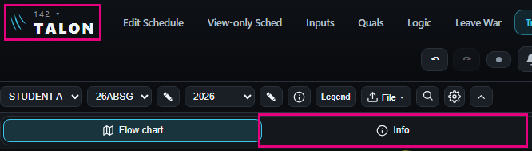
Today: narrower, the Flow chart shows; the window is hidden behind "Info".
Recommended: the Info panel's windows that only show things (Down days, Failures) close by themselves at a pick, like the other show-only windows you approved.
Still to check before the build: the Info panel also has two small pop-ups for a lull, and I have not yet pressed them. If one can hold a choice not yet saved, a pick is refused while it does, with a note naming the Info tab, its words drawn for you first. The other choice for Down days and Failures: refuse, the note naming the Info tab (one press on "Info" shows him the window).
↑ The list
E5. An input window held since midnight, then you pick
The pick goes through and gives it back, as today.
When this happens: Saber has an input open with words typed when, at midnight, a move saved for him earlier takes his home from 142 to 149. The window is held under "This change could not be saved." and Close. He picks 142. Very rare.
Today: the pick goes through, and on 142 the window comes back live with his words, so he can save them there.
 Today: held on 149 under "This change could not be saved.", his words still in Remarks.
Today: held on 149 under "This change could not be saved.", his words still in Remarks.
 Today: 142 picked; the band is gone, the window is live and his words can be saved.
Today: 142 picked; the band is gone, the window is live and his words can be saved.
Recommended: keep today's way for a window already held: the pick goes through and gives it back. Refusing would leave Close as his only way on, and Close drops his words without asking. The later build that replaces held windows with a card settles this for good.
On a phone this way back cannot be reached today: the held window covers the ☰ button, so the only way on is Close, and his words are lost. That stays so until the later build (it is group B's question B5). The other choice: refuse the pick, as for any open window.
↑ The list
E6. Who is told when someone is given Plan of 149
Everyone who already gets 149's admin lines; his name wears "142".
When this happens: Kestrel (149's admin) gives Hunter (142's admin) Plan of 149, so Hunter can help plan 149's week. Later he ends it. A few times a year.
You ruled that 149's admins are told on their bell, and who did it. Two things are open. First, with three squadrons, a 149 admin reading "Hunter" may not know where Hunter is from. Second, Mako (150's admin) might also hold Plan of 149, and Saber (a master admin) may have 149 switched on in his bell; are they told too?
 Drawn: the two lines as worded (the top two).
Drawn: the two lines as worded (the top two).
 Drawn: the same, Hunter's name wearing his home "142".
Drawn: the same, Hunter's name wearing his home "142".
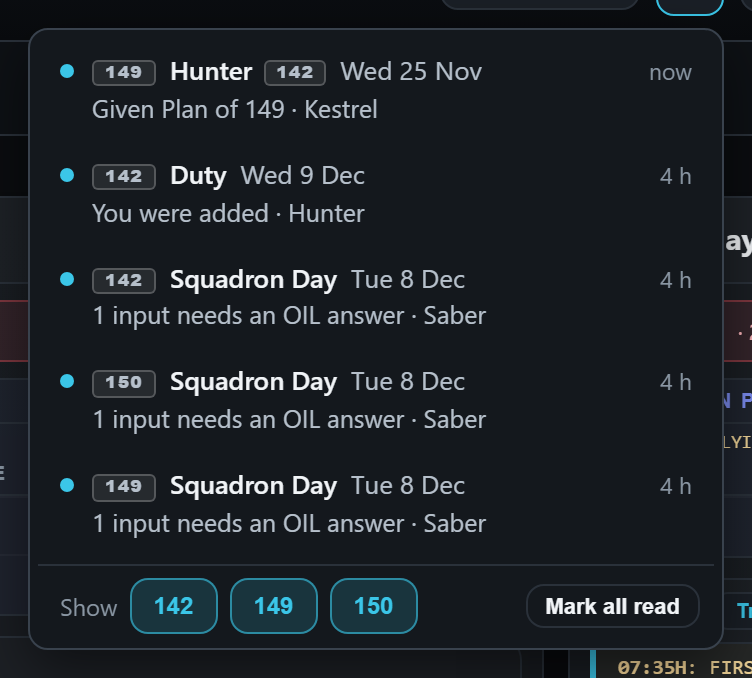
Drawn: on a bell that shows several squadrons, the line wears two grey numbers: 149 first (whose line it is), and 142 after Hunter's name (where he is from).
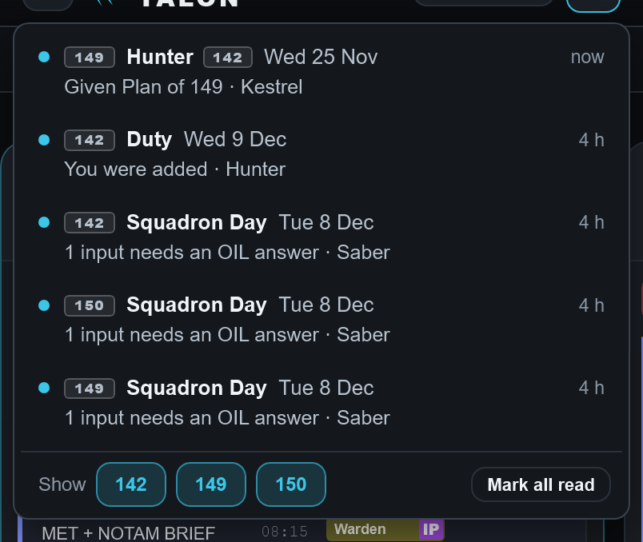
Drawn, phone.
These two pictures were made on Kestrel's own bell to show the words. Kestrel himself would not get them: nobody is told of his own press, as today. The lines under them are other lines of his, not part of this.
Recommended: Hunter's name wears his home squadron's grey number, as his name does on 149's Admin → Users. And the line goes to everyone who already gets 149's admin lines on his bell: 149's own admins, anyone holding Plan of 149 (Mako), and a master admin with 149 switched on (Saber). Never the one who pressed.
Changed at the earlier review. The page first recommended "only 149's own admins, the people who can give or end it". But Saber can give and end it too, and Mako plans 149's week beside Hunter and gets every other 149 admin line. A special, smaller audience for this one line is one more rule to remember and one more place to go wrong. The first recommendation stays as the other choice below.
On a bell that shows several squadrons this line carries two numbers: "149" first, saying whose line it is, and "142" after Hunter, saying where he is from. That is not drawn yet; it is drawn for you before it is built.
↑ The list
E7. Undo of "+ New squadron" with a window open
Refused in the first build; the rest waits with group B.
When this happens: Saber makes squadron 150, picks it, opens the Calendar there (or a save fails), then presses Undo. Only a master admin makes squadrons, so this is rare.
Today: "Undid: adding a squadron". 150 is gone, the bar is back on 142, and nothing is asked. Pressed with nothing open; with a window open or a change not saved it has not been pressed yet, and from how the app is made they go with it.
 Today: on the new squadron 150, Undo (marked) about to be pressed.
Today: on the new squadron 150, Undo (marked) about to be pressed.
 Today: after Undo. Back on 142, 150 gone from the list, only a passing note.
Today: after Undo. Back on 142, 150 gone from the list, only a passing note.
Why it is here: you put Undo off to group B, after the first build. But this one Undo changes the squadron in view, the very thing the guard stops, so the first build would leave this one way through. I should have told you that when you put group B off.
Recommended: the first build refuses this Undo while a window is open or a change is not saved, with the grey note under Undo (at the foot on a phone). A draft of its words: “Blocked: close the open window, then press Undo again.” Drawn for you before it is built. Everything else about Undo still waits for your group B answers.
What follows from it: if you later take group B's B7 as recommended (on 150 this Undo is greyed and says "Pick 142 to undo your changes there."), the greyed button replaces this refusal, so this piece is built for the meantime only. The other choice: leave it open until group B. Nothing else in the first build depends on it.
↑ The list
E8. A master admin's "All squadrons" tick with 149 picked
Updated in round 6. Drawn as recommended in N5, with the "From other squadrons" block (N3) beside it. See N5 ↓
The tick goes: the squadron picked stands open, the others fold, for everyone.
When this happens: Saber (home 142) has 149 picked, goes to Admin → Users and ticks "All squadrons" in Filter, to see everyone. Now and then.
You ruled that in "All squadrons" his own squadron stands open and the rest fold. You also ruled that on 149's page a 142 man shows only his name and his 149 access line, and that Admin → Users follows the squadron picked. With 149 picked and the tick on, which wins?
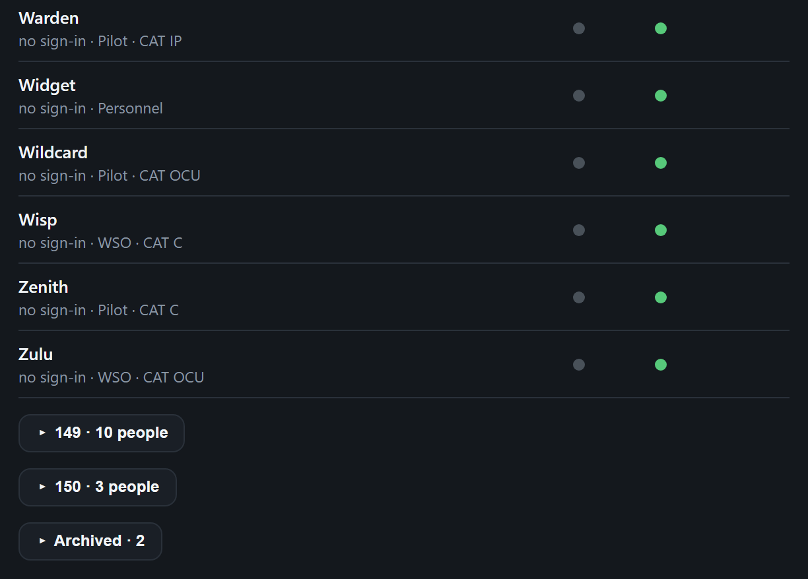
Drawn (from D7): with the tick on. 142 open, "▸ 149 · 10 people" and "▸ 150 · 3 people" folded under it.
 Drawn (from D4): no tick. The squadron picked open, the others folded under it.
Drawn (from D4): no tick. The squadron picked open, the others folded under it.
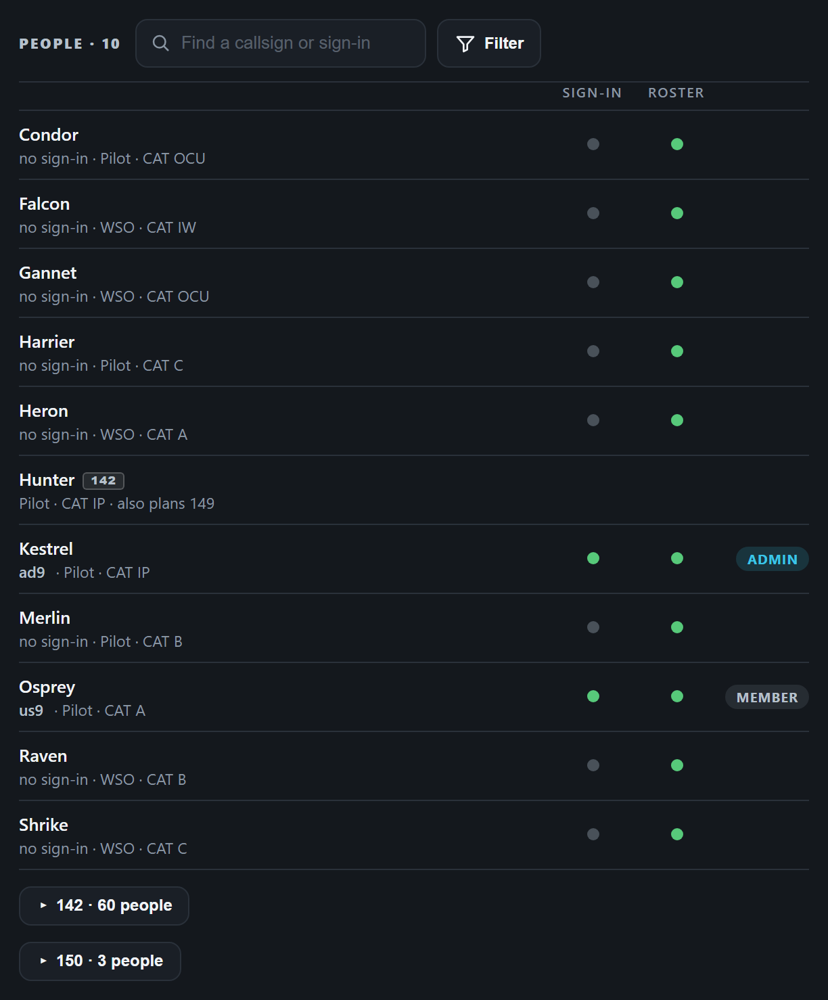
Drawn, recommended: Saber on 149 with no tick. 149's people whole, except Hunter, who is 142's and shows short; 142 and 150 folded under them.
Recommended: the "All squadrons" tick goes. Since you ruled the folded headings, every Admin → Users page already shows every squadron: the one picked open, its rows whole; each other squadron one closed heading, its rows short (name and the access line for the squadron picked). That is the same for Kestrel, Hunter and Saber. On his own 142 Saber sees 142 open and the rest hidden, as you asked. To change a 150 man's sign-in, role or archive him, Saber picks 150 first: one press.
Changed at the earlier review. The page first recommended: with the tick on, Saber sees every row whole, 142 open at the top. Case: Saber, 149 picked, ticks "All squadrons", opens Ranger (142) and archives him, under a top bar reading 149. That is the fault you ruled out today for Hunter (a 142 man changed from 149's page), let back in for a master admin through the tick. And once the headings exist, the tick shows nothing new: the two pictures above are the same page.
Its cost: it takes away a tick you ruled in on 22 Nov and spoke of today ("his sqn is still mainly opened and the rest hidden"); what you asked for still holds on his own squadron. Saber no longer sees everyone's whole row in one list.
The other choices: (2) keep the tick, every row whole, 142 open at the top, as first recommended; (3) keep the tick, but the rows of squadrons other than the one picked stay short.
↑ The list
E9. Fourteen small things I read into your answers
Take them as one, or tap Differently on any.
Each is how the plan understands an answer of yours where you did not say. None is built unless you let it stand. Each has an example, what I would build, and a button of its own. None can lose work; the worst any does is cost one press.
a. A moved man's old inputs. Ranger moves from 142 to 149 and is later given View of 142. View does not open 142's Inputs page. I would build: he keeps seeing his old 142 inputs on his own Inputs page, so he can still answer them. (Your rule takes them off his page only for a squadron whose Inputs page he can open.)
b. Windows you have not seen one by one. Saber has the Leave War's OIL tracker open, or the Tracker's Show All, or one of the Scheduler Board's two question cards, and picks 149. I would build: each is checked before the build. One with nothing to edit closes by itself, as you ruled for the others; the rest refuse.
c. A bell line that takes you to another squadron. Saber, on 142 with "Who's available" open and Logic in edit mode, presses a 149 line in his bell. I would build: the same as a pick: the show-only window closes and the edit mode ends. Back on 142 later, Logic is not in edit mode.
d. A pick waiting for a save to finish. Saber moves a puck and picks 149 while "Saving…" still shows. Before the save lands he presses Quals. I would build: the waiting pick is dropped. He stays on 142, on Quals.
e. The fade when you did not press. Hunter's move to 149 lands at midnight with the app open; the bar changes from 142 to 149. I would build: the number fades twice then too. Only the top bar's number fades, not the ☰ menu's line or the Scheduler Board's title. After the refresh card (a later build) there is no fade, because Refresh brings the sign-in screen and you ruled none at sign-in. The films.
f. Add a person, the small things. Kestrel adds Nova, then wants to add two more. I would build: after a person is added the form clears and stays open for the next one. Escape does what Cancel does. The button still reads "Add person and sign-in" once a sign-in is typed, as today. A second press on "+ Add a person" with the form open closes it if it is empty and does nothing if something is typed (Cancel is the way to clear it). The pictures.
g. A man's row on another squadron's page. Kestrel, on 149's page, sees Ranger (142). I would build: no sign-in dot, no roster dot and no role badge on that row. Updated in round 6: Hunter, who holds Plan of 149, now stands in the "From other squadrons" block and under 142's heading, no longer on 149's main list (N3 d), and an admin's short row says "admin" in words (N3 e). Typing "Ranger" in the search opens 142's heading with him under it. The pictures.
h. Folding a heading over a row you changed. Kestrel opens "142 · 60 people", opens Ranger, presses View, and folds the heading without saving. I would build: the row closes as its Cancel does and the choice is dropped: one press to make again. Nothing is left changed out of sight.
i. "The bell shows more than one squadron". Saber has 142 and 149 switched on under Show, but only 142 lines happen to be in the list. I would build: the numbers show all the same. It goes by the Show buttons switched on, so the number column does not come and go as lines arrive. The pictures.
j. Bug reports. Ranger sends a report on 142; Mako holds Plan of 142. I would build: reports are kept for good (today they vanish at a reload). The number shows on a report once the app has more than one squadron. Someone holding Plan of 142 is rung for a 142 report as 142's admins are. The pictures.
k. Restoring an archived man whose callsign is now taken. Saber restores 142's archived Ace while 149 has a live Ace. I would build: the refusal names the squadron too: "Ace is already taken on 149".
l. A Plan the app ends by itself. Hunter holds Plan of 149 and is moved to 150, or 142's admin makes him a member, or he is archived. I would build: the same people are told as in E6, the line saying why: "Plan of 149 ended: he moved to 150", "Plan of 149 ended: made a member". Drafts, drawn before they are built.
m. "Every Monday" opened and left alone. Saber opens "Every Monday", which comes up with one choice already lit, presses nothing in it, and picks 149. I would build: it does not count as half done until he presses something in it, so the pick goes through.
n. A note's two halves joined. Saber has "+ New squadron" half filled on Admin → Squadrons, is looking at Admin → Users, and presses his name badge. I would build: the two halves you approved apart, joined: “Blocked: save or cancel the new squadron on Squadrons, then switch to the member view.” ("on Squadrons" is a draft.)
↑ The list
Group D: what you ruled, drawn
D1. "+ Add a person" at the top, with Cancel
Updated in round 6. Redrawn: the buttons are now the app's own pair (N11). See N11 ↓
As drawn.
What you ruled: the button beside Filter; the form opens under it; Cancel clears it and folds it shut; while something is typed in it, a pick of another squadron is refused.
Today: the form at the very foot of the list, under 60 people.
Drawn, desktop: "+ Add a person" beside Filter.
Drawn: pressed, the form opens under the row; "Add person" and "Cancel" at its foot.
 Drawn: after Cancel, shut and empty.
Drawn: after Cancel, shut and empty.
 Drawn, phone: full width under the search.
Drawn, phone: the form open.
Drawn: a name typed, 149 pressed: "Blocked: add or cancel the new person, then pick 149."
Drawn, phone: the same note at the foot.
Drawn, phone: full width under the search.
Drawn, phone: the form open.
Drawn: a name typed, 149 pressed: "Blocked: add or cancel the new person, then pick 149."
Drawn, phone: the same note at the foot.
On a desktop the note covers part of the page's title "Admin" for the few seconds it shows; nothing you would press is under it. The form still has its "Home squadron" box; whether another squadron's page should offer other squadrons there is one of the questions still to come, and does not change this drawing's place, buttons or note.
Recommended: as drawn.
↑ The list
D2. The squadron number's two fades
Updated in round 6. On a phone the fade now waits until the ☰ menu has closed (N8). See N8 ↓
As drawn.
What you ruled: at every change of squadron, the number dims to about a third and back, twice, in about a second; with "less motion" on, white for a second instead.
Drawn: Saber on 142 picks 150. Each film shows only the corner of the top bar that holds the number, at about its real size. Watch the small grey number above TALON.
Desktop: 142 to 150.
Phone.
Desktop, less motion on: white, then grey.
Phone, less motion on.
The number is small and already grey, so the fade is gentle. If you had to look for it, say so: it could dim further, never fully out.
Recommended: as drawn.
↑ The list
D3. The bell with three squadrons
As drawn.
What you ruled: when the bell shows more than one squadron, every line wears its squadron's grey number (the app's own grey number box, no colour), first on the line, in one column. A line about your own account keeps the place empty.
 Drawn, desktop: Saber with 142, 149 and 150 switched on. Every line here is a real line.
Drawn, desktop: Saber with 142, 149 and 150 switched on. Every line here is a real line.
 Drawn, phone.
Drawn, phone.
 Drawn: Hunter's bell (142 and 149). His two own-account lines, the lower two, keep the number's place empty. 150 is not there: View of a squadron never shows its bell lines, as you ruled.
Drawn: Hunter's bell (142 and 149). His two own-account lines, the lower two, keep the number's place empty. 150 is not there: View of a squadron never shows its bell lines, as you ruled.
Three of Saber's lines read alike ("Squadron Day … 1 input needs an OIL answer · Saber"); only the number tells them apart, which is what the column is for.
Recommended: as drawn.
↑ The list
D4. Other squadrons folded on Admin → Users
Updated in round 6. The page now has a block at the top, Incoming and Outgoing (N3), and no grey number inside a folded group (N4). Then your new order moves the folded squadrons to the page's foot (N13). See N13 ↓
As drawn.
What you ruled: under a squadron's own people, each other squadron is one closed heading; seen only by those who may give access to that squadron.
Drawn: Kestrel on 149. Under 149's people, "▸ 142 · 60 people" and "▸ 150 · 3 people".
 Drawn, phone. One thing in this picture is wrong and will be redrawn: Hunter's row at the top still shows his sign-in name, "Admin" and the two dots. On 149's page a 142 man shows none of those (you ruled it; see D5).
Drawn, phone. One thing in this picture is wrong and will be redrawn: Hunter's row at the top still shows his sign-in name, "Admin" and the two dots. On 149's page a 142 man shows none of those (you ruled it; see D5).
Recommended: as drawn, with Hunter's row put right.
↑ The list
D5. A man of another squadron, opened
Updated in round 6. Another squadron's short row now adds its role in words: "admin" (N3). See N3 ↓
Short rows; press one to open its access line, with Save and Cancel.
What you ruled: on 149's page a 142 man shows only his callsign, "142", seat, CAT and his 149 access line (None · View · Plan). Nothing else.
When this happens: Kestrel wants Hunter to help plan 149's week. On 149's Admin → Users he opens "142 · 60 people" and looks for Hunter. A few times a year.
Today: Hunter on 149 opening Ranger (142): sign-in, role, Save, Suspend, Archive and Delete all live. Fixed in the build straight after the first.
Drawn, the first way: "▾ 142 · 60 people" opened; the access line on every row, live.
 Drawn, the first way, phone.
Drawn, the first way, phone.
 Drawn, recommended: short rows; Blade (a 142 admin) opened to his one 149 line, with Save and Cancel; Bolt's row says "also views 149".
Drawn, recommended, phone.
Drawn, recommended: a man with no sign-in opened: "No sign-in. Ask 142's admin to give him one first." and Cancel.
Drawn, recommended: a 142 member opened: Plan greyed, "Plan is for admins only."
Drawn, recommended: short rows; Blade (a 142 admin) opened to his one 149 line, with Save and Cancel; Bolt's row says "also views 149".
Drawn, recommended, phone.
Drawn, recommended: a man with no sign-in opened: "No sign-in. Ask 142's admin to give him one first." and Cancel.
Drawn, recommended: a 142 member opened: Plan greyed, "Plan is for admins only."
Recommended: under the heading each man is one short row: callsign, "142", seat and CAT, and in words what he already holds ("also views 149", "also plans 149"). A press opens the row, as every row on this page opens: the one access line for 149, with Save and Cancel. A man with no sign-in opens to the words "No sign-in. Ask 142's admin to give him one first." in place of the buttons, since access means nothing for him until he has one.
Changed at the earlier review. The page first recommended the drawing above: the three buttons live on all sixty rows, "None" lit on each. Three things go wrong with it.
1. Kestrel, scrolling sixty rows on his phone, brushes "View" on Basher. Either Basher is given View of 149 at once, with no Save and no way to see it happened, or the press waits for a Save that the drawing does not have.
2. Most of these sixty have no sign-in, and Plan is for admins only; yet the drawing offers View and Plan to all of them.
3. Sixty lit buttons in a column say nothing: almost every one reads "None".
With short rows that open, the page works one way everywhere, the guard's rule you already gave ("an opened row with a change not saved") covers it, and the list shows at a glance who holds anything. Its cost: one more press to give access. It is drawn for you before it is built.
One more small choice, yours because you listed what such a row shows: most of these men have no sign-in, so Kestrel would open row after row to read "No sign-in". The closed row could carry today's quiet words "no sign-in" on its second line ("Pilot · CAT IP · no sign-in"), so he sees it without opening. Not recommended over your list unless you want it; "Add 'no sign-in'" below says so.
The other choice: the first way, as drawn, each press taking effect at once.
↑ The list
D6. Plan greyed for one who may not give it
The reason as words under the line.
What you ruled: Plan of 149 is given and ended by 149's own admins or a master admin, never by someone who only holds Plan of it.
Example: Hunter holds Plan of 149 and, on 149's page, opens another 142 admin. He may give him View of 149, but Plan is greyed.
 Drawn: the reason as words under the line: "Only 149's own admins or a master admin can give or end Plan of 149."
Drawn: the reason as words under the line: "Only 149's own admins or a master admin can give or end Plan of 149."
 Drawn, the other choice: the same reason shown only when the mouse rests on it.
Drawn, the other choice: the same reason shown only when the mouse rests on it.
 Drawn: the roles table's note 5: "Only a master admin makes squadrons or master admins. Plan of a squadron is given by its own admins or a master admin."
Drawn: the roles table's note 5: "Only a master admin makes squadrons or master admins. Plan of a squadron is given by its own admins or a master admin."
Recommended: the reason as words under the line, as the app's other greyed access reasons already are. A reason shown only on mouse rest never shows on an iPhone.
One reason at a time, the first that is true: for a man with no sign-in, "No sign-in"; for a member, today's "Plan is for admins only."; for an admin, the new words above. The pictures here show the reason under a man with no sign-in; they are redrawn on an admin's row.
↑ The list
D7. A master admin's own squadron open
As drawn.
What you ruled: his own squadron stands open and every other is folded.
 Today: "All squadrons" ticked: every squadron open, 73 people in one long list.
Drawn, the top: Saber's 142 open.
Drawn, the foot: under 142's last man, "▸ 149 · 10 people" and "▸ 150 · 3 people" closed.
Today: "All squadrons" ticked: every squadron open, 73 people in one long list.
Drawn, the top: Saber's 142 open.
Drawn, the foot: under 142's last man, "▸ 149 · 10 people" and "▸ 150 · 3 people" closed.
This is what Saber sees on his own 142 whichever way you answer E8.
Recommended: as drawn.
↑ The list
D8. Another squadron's archived callsign
Updated in round 6. "It's him" is now drawn from start to end (N9). See N9 ↓
"Someone new" answers the question; "Add person" stays the one button that adds.
What you ruled: the note names the squadron and shows enough to recognise him; for now only "Someone new: add him" and "If this is him, ask 142's admin". "It's him" comes with the transfer build.
Example: Kestrel adds a new pilot on 149 and types "Jester". 142 has an archived Jester.
Drawn, the first way: "142 has an archived Jester: Pilot, CAT B, archived 25 Nov 26. Is this him?"
 Drawn, the first way, phone.
Drawn, recommended: "Someone new" answers the question; "Add person" greyed, its reason under it: "Answer “Is this him?” first."
Drawn, recommended, phone.
Drawn, recommended: after "Someone new": "A new Jester. 142's admins are told when you add him." and "Add person" live.
Drawn: archived men of that callsign on two squadrons, each listed. To be redrawn: each should show only seat, CAT and the date, as the note above does; not "no sign-in", the two dots or who archived him.
Drawn: two squadrons, after "Someone new": "A new Ace. 142's and 150's admins are told when you add him."
Drawn, the first way, phone.
Drawn, recommended: "Someone new" answers the question; "Add person" greyed, its reason under it: "Answer “Is this him?” first."
Drawn, recommended, phone.
Drawn, recommended: after "Someone new": "A new Jester. 142's admins are told when you add him." and "Add person" live.
Drawn: archived men of that callsign on two squadrons, each listed. To be redrawn: each should show only seat, CAT and the date, as the note above does; not "no sign-in", the two dots or who archived him.
Drawn: two squadrons, after "Someone new": "A new Ace. 142's and 150's admins are told when you add him."
 Drawn: once the new Jester is added, the top line on 142's admin's bell.
Drawn: once the new Jester is added, the top line on 142's admin's bell.
 Today: a live man's callsign: "…is already taken — callsigns must be unique", at the foot of the screen.
Today: a live man's callsign: "…is already taken — callsigns must be unique", at the foot of the screen.
 Drawn, the first way: "Ranger is already taken on 142" at the foot.
Drawn, recommended: the same words under the callsign box, where the other note stands.
Drawn, the first way: "Ranger is already taken on 142" at the foot.
Drawn, recommended: the same words under the callsign box, where the other note stands.
Today an archived callsign gives no warning at all: the new man goes in silently.
Recommended: the note as drawn, under the callsign box. Its button reads "Someone new" and only answers the question; then the form's own "Add person", greyed until he has answered (with its reason under it: "Answer “Is this him?” first."), does the adding as it always does; once answered, the note reads "A new Jester. 142's admins are told when you add him." 142's admins' bell line is sent when the man is added, not when "Someone new" is pressed. And "Ranger is already taken on 142" stands under the callsign box too, where the other note is.
Changed at the earlier review. The page first recommended "Someone new: add him" as the one way on, with "Add person" greyed. Case: the note comes up as soon as "Jester" is typed, before Kestrel has picked Pilot or a CAT. He presses "Someone new: add him" and nothing can be added yet. And the form would have two buttons that add, in two places, the main one greyed. One button that adds, in the same place every time, is the app's own way.
Its cost: it changes the words on the button from the ones you were told ("Someone new: add him"), and it is one more press.
Not drawn yet, and drawn before it is built: what the note says to someone who is an admin of both squadrons (Saber, or Hunter adding on 149), who by your ruling decides by himself.
↑ The list
D9. Bug reports with their squadron
As drawn.
What you ruled: one list for every admin, newest first, each report wearing its squadron's grey number, no headings. So 142's admins read 149's reports too.
 Today: Help's list; nothing says which squadron a report came from.
Today: Help's list; nothing says which squadron a report came from.
 Drawn: one list, newest first, each report wearing its grey number.
Drawn: one list, newest first, each report wearing its grey number.
Recommended: as drawn.
↑ The list
D10. The badge reading "View only"
Plain words there, not a switch: nothing would change.
What you ruled: where he can only look, the badge reads "Hunter · View only" ("Ranger · View only" for a member); where he plans, it stays "Admin". What a press on it does there was left to be tried.
Example: Hunter picks 150, where he can only look, and presses his name badge.
Drawn: on 150, "Hunter · View only".
 Drawn, the first way, phone: "Signed in as Hunter · View only", the switch still in the menu.
Drawn, the first way, phone: "Signed in as Hunter · View only", the switch still in the menu.
 Drawn, recommended: on 150 the badge is plain words, not a button.
Drawn, recommended: on 150 the badge is plain words, not a button.
 Drawn, recommended, phone: the menu's Account block with no "Switch to the member view" on 150.
Drawn, recommended, phone: the menu's Account block with no "Switch to the member view" on 150.
 Drawn: on 149, where he plans, it stays "Admin".
Today, tried: a press on the badge on 150 switches him to the member view. The same two pages; only the badge's word changes.
Drawn: on 149, where he plans, it stays "Admin".
Today, tried: a press on the badge on 150 switches him to the member view. The same two pages; only the badge's word changes.
Recommended: the words as drawn. On a squadron he only views, the badge is plain words and not a switch, and the ☰ menu's "Switch to the member view" is left out there. To see the member view he picks his own squadron first.
Changed at the earlier review. The page first recommended that a press still switches to the member view, as everywhere. Tried today: on 150 both views show the same two pages. And by your ruling the member view's badge there reads "View only" as well. So Hunter presses, sees nothing change at all, and is now in the member view without knowing. He picks 142 and finds Edit Schedule gone.
Its cost: the badge is a switch on some squadrons and plain words on others.
The other choice: a press still switches, as first recommended.
↑ The list
D11. "+ Commitment" on a squadron with no SANS aircrew
Greyed, the reason as words under it.
What you ruled: on another squadron's SANS calendar "+ Commitment" offers only that squadron's SANS aircrew; with none, it is greyed and says why.
Example: Saber picks 150, opens a day on its SANS calendar. 150 has no SANS aircrew. (Hunter, who only views 150, never reaches this calendar.)
 Today: 150's SANS calendar, "+ Commitment" live with nobody to commit.
Today: 150's SANS calendar, "+ Commitment" live with nobody to commit.
 Drawn: greyed, "150 has no SANS aircrew." This picture shows the reason as a label on mouse rest; it is redrawn with the words standing under the button.
Drawn: greyed, "150 has no SANS aircrew." This picture shows the reason as a label on mouse rest; it is redrawn with the words standing under the button.
 Drawn, phone.
Drawn, phone.
Recommended: greyed, and the reason shown as words under the button, so a phone shows it too.
↑ The list
D12. "+ Input" and the sign-off boxes on another squadron
Updated in round 6. Redrawn in the app's own drop-down (N10). See N10 ↓
As drawn; the number in plain letters in the boxes.
What you ruled: on another squadron's Inputs page "+ Input" starts empty and offers only that squadron's men; in the sign-off boxes a name from another squadron wears its number.
Example: Hunter, planning 149's week, presses "+ Input" on 149's Inputs page, then signs PLANNED BY on a 149 day.
 Today: "+ Input" on 149 starts with Hunter, a 142 man, picked.
Today: "+ Input" on 149 starts with Hunter, a 142 man, picked.
 Drawn: the Person list shown open: empty first, then only 149's men.
Today: 149's PLANNED BY box; in its list Hunter and Saber read like 149's own.
Drawn: the Person list shown open: empty first, then only 149's men.
Today: 149's PLANNED BY box; in its list Hunter and Saber read like 149's own.
 Drawn: names from another squadron wearing "142". This picture shows the grey number box; in the build it is plain letters, as below.
Drawn: after choosing, the box reads "Hunter · 142". Today a signed box shows the callsign alone, so "· 142" is new here.
Drawn: names from another squadron wearing "142". This picture shows the grey number box; in the build it is plain letters, as below.
Drawn: after choosing, the box reads "Hunter · 142". Today a signed box shows the callsign alone, so "· 142" is new here.
Recommended: as drawn. In the sign-off boxes the number is written after the name in plain letters, because the browser's own list cannot show the grey box.
Changed at the earlier review, a small one. Written "Hunter · 142", with the app's own dot, not "Hunter 142", which reads like one callsign. Still to check before the build: the box shows what its list says, so a signed box would read "Hunter · 142" too; whether the published day then carries the number is checked and told to you.
Words still to draft and draw: what "Add" says when nobody is picked in the empty Person box.
↑ The list
Found at the last page's review, still to be put to you as questions
- "Mark all read" marks every line the list is showing. Pressed with 149 picked and both 142 and 149 switched on under "Show", it marks the 142 lines read too. Whether it should mark only the lines of the squadron picked is the question.
- While an OIL question of yours is waiting, one tap on the bell goes straight to it, so the bell's list and its "Show" buttons cannot be reached until it is answered.
Group B: 12 that wait until after the first build (Logout, Undo, the refresh card). Tap to open.
B1. Logout while a change is not saved
"Your last changes aren't saved yet. Log out anyway?"
When this happens: "Not saved — keep this page open" is showing and you press Logout. A bad connection, most likely at a shared computer.
Today: nothing is asked, and nothing is lost. The sign-in screen comes up with the band and Retry still over it. The next sign-in waits ("The last change has not saved yet — check the connection. Sign in waits until it saves."). When Retry gets through, the change is saved and the screen says "Saved. Press Sign in again."
 Today, phone: after Logout, the sign-in waits until the change saves.
Today, phone: after Logout, the sign-in waits until the change saves.
You ruled that Logout asks here. The draft question you read said "Log out and lose it?". That is not what the app does, and I do not recommend changing the app to make it true.
Recommended: the question says what really happens.
Your last changes aren't saved yet. Log out anyway? — Log out · Stay
The other choice: Logout throws the waiting change away, with "Your last changes aren't saved. Log out and lose them?" — "Discard and log out" · "Stay". That would be a new way to lose work.
 Drawn, recommended: nothing is lost, so "Log out" is a plain button.
Drawn, recommended: nothing is lost, so "Log out" is a plain button.
 Drawn, the other choice: the change would be thrown away.
Drawn, the other choice: the change would be thrown away.
Changed at the earlier review. I agree that the question must not say "lose". I would add what does happen, so "anyway" has a meaning: "Your last changes aren't saved yet. They will save when the connection is back, if this page stays open. Log out anyway?"
↑ The list
B2. Logout with an input open and words typed in it
"Log out and lose them?"
When this happens: you press Logout with an input window open and unsaved words in it.
Today: you are signed out at once and the words are lost, nothing asked. You ruled that Logout asks the window's own question first. Its words today are about closing the window, not about logging out.
Recommended: at Logout the question and its button say Logout. The window's ✕ and Escape keep today's words.
This input has unsaved changes. Log out and lose them? — Discard and log out · Keep editing
 Drawn, today's words: "Close it and lose them?" — the button says close, and also logs you out.
Drawn, today's words: "Close it and lose them?" — the button says close, and also logs you out.
 Drawn, recommended: "Log out and lose them?"
Drawn, recommended: "Log out and lose them?"
↑ The list
B3. Logout with an Admin → Users row open
Asked, as drawn.
When this happens: a row is open with an unsaved change and you press Logout.
Today: signed out, the change lost, nothing asked.
Recommended: asked, in the same shape as B2.
The open row has unsaved changes. Log out and lose them? — Discard and log out · Keep editing
 Drawn: the question hanging from Logout, the row open below.
Drawn: the question hanging from Logout, the row open below.
↑ The list
B4. Logout over a window that has no question of its own
One question that names the window.
When this happens: you press Logout with a holiday's name typed in "Add a holiday", or with answers chosen in a day's OIL list and not saved. Only the input window has a question of its own.
Today: signed out, the typing or the answers lost, nothing asked. (Place a bid and the Tracker's Edit details cover Logout with their shade on a desktop, so they cannot be left this way.)
Recommended: one question for all such windows, naming the window by its own title.
“Add a holiday” has unsaved changes. Log out and lose them? — Discard and log out · Keep editing
 Drawn: three windows are open; the question names the one that holds the typing.
Drawn: three windows are open; the question names the one that holds the typing.
Changed at the earlier review. I agree. Missing beside it: Logout with "Add a person", giving access or "+ New squadron" half filled in. The same one question would name each: "“Add a person” has unsaved changes. Log out and lose them?"
↑ The list
B5. Reaching Logout on a phone with a window open
The top bar stays in reach above the window.
When this happens: on a phone, Logout lives in the ☰ menu. An input window fills the screen and its title strip covers ☰. You ruled that Logout can be reached with a window open; nothing does that today.
Recommended (first picture): the window stands just under the top bar, so ☰ stays in reach and Logout is where you already look for it. Nothing new is added to the screen.
Its cost: the window is shorter by the height of the top bar (49px). Undo, Redo, the bell, the squadron list and the member-view line become reachable over the window too, as they already are on a desktop; a pick from there is refused with the note at the foot. The other choice (second picture): a Logout button on the window's own strip beside ✕. It reaches only Logout, puts a second Logout on screen, and a thumb slip beside ✕ logs you out.
 Drawn, recommended: the bar stays above the window; ☰ in reach.
Drawn, recommended: the bar stays above the window; ☰ in reach.
 Drawn, the other choice: Logout on the window's strip.
Drawn, the other choice: Logout on the window's strip.
 Drawn, recommended: ☰ opened over the window, Logout inside.
Drawn, recommended: ☰ opened over the window, Logout inside.
↑ The list
B6. Undo with changes waiting on two other squadrons
"Pick 142 or 149 to undo your changes there."
When this happens: you ruled that Undo reaches only the squadron in view and that the greyed button says why. A master admin has made changes on 142 and on 149 and is now looking at a third squadron.
Recommended: the reason names each squadron that holds a change of yours, and only squadrons you can pick now.
One: Pick 142 to undo your changes there.
Two: Pick 142 or 149 to undo your changes there.
Redo: Pick 142 to redo your changes there.
These replace the draft you read ("Your 142 changes are on 142's Undo."): there is only one Undo button, so "142's Undo" names a thing the screen does not have. A change made on 149 does not clear a Redo waiting on 142; today's app already keeps it.
 Drawn, desktop: the greyed Undo and its reason.
Drawn, desktop: the greyed Undo and its reason.
Changed at the earlier review. I agree for two squadrons. With many, the reason should name only the squadron of your latest change ("Pick 142 to undo your last change there."), so the note never grows into a list.
↑ The list
B7. Undo of "+ New squadron" while that squadron is in view
It waits on the squadron you made it from.
When this happens: Saber, on 142, makes squadron 150 with "+ New squadron", picks 150, and presses Undo.
Today: 150 is taken away under him. He lands back on 142's Admin page with only the passing note "Undid: adding a squadron" to say so.
 Today, phone: after Undo, back on 142 with a passing note.
Today, phone: after Undo, back on 142 with a passing note.
Recommended: making a squadron belongs to the squadron you were on when you made it (142). On 150 the Undo is greyed and says "Pick 142 to undo your changes there." So a squadron is never undone while you are standing in it.
↑ The list
B8. The greyed Undo on a phone
A tap shows the reason.
When this happens: the greyed Undo's reason is shown when the mouse rests on it. A phone has no mouse: a tap and a long press both show nothing. You read on an iPhone, so today you cannot read why Undo is grey. This has been so for every greyed-Undo reason, not only the new one.
Recommended: on a phone, a tap on a greyed Undo or Redo shows its reason as the app's plain passing note at the foot (not the grey "Blocked:" note, which is for a change of yours that was refused).
 Today, phone: Undo greyed; nothing says why.
Today, phone: Undo greyed; nothing says why.
 Drawn: after a tap, the reason at the foot.
Drawn: after a tap, the reason at the foot.
↑ The list
B9. The refresh card when nothing is open
Shown all the same.
When this happens: Hunter's move to 149 takes effect at midnight while he has the app open with no window open.
Today: the bar changes from 142 to 149 and his badge from Admin to Member, without a word. The only sign is a dot on the bell.
 Today, phone: before midnight.
Today, phone: before midnight.
 Today, phone: after midnight. 149, nothing said.
Today, phone: after midnight. 149, nothing said.
Recommended: the card is shown all the same, so he knows why the app changed under him. One rule: whenever the squadron or his rights change without his press, the card.
For a man who is not moving, midnight shows nothing; tried on the app. A posting out that ends his access keeps today's "Your access is suspended" screen. A posting to SANS changes nothing he can see, so nothing is shown.
↑ The list
B10. The refresh card's words, true on any day it is read
"You are 149's now".
When this happens: the card you approved says "You are 149's from today" and "took effect at midnight". A card raised at midnight is read the next morning, or two days later if the computer was left on. Then "from today" is no longer true.
Recommended: one wording that is true whenever it is read. This changes words you approved.
You are 149's now
Your move to 149 took effect on Thu 16 Jul. Refresh and sign in again to carry on. Anything you hadn't saved is lost.
 Drawn, recommended: the date in place of "today" and "midnight".
Drawn, recommended: the date in place of "today" and "midnight".
 The card you approved.
The card you approved.
↑ The list
B11. Refresh while a save is waiting
Refresh tries the save once first.
When this happens: the refresh card comes up while "Not saved" is showing.
Today: reloading the page while a save waits loses that change; only the browser's own "leave this page?" question stands in the way.
Recommended: the card's Refresh button tries the waiting save once, then reloads. If the save still fails the change is lost, as the card already says.
↑ The list
B12. Five small cases, all recommended as they are today
All left as they are.
When this happens: each looked like a way to lose work at a pick. Tried on the app, none loses anything, so I recommend no change. Take them as one.
Words typed in a day's note on Edit Schedule, the cursor still in it: saved into 142's note, where they were typed.
A figure typed in a Balances box and not left: saved at the pick, with its line in the edit history.
Words in Help's bug-report box: stay in the box on both squadrons until sent.
A calendar day's "+ Note" half-typed: saved onto 142's day. Its window is one the guard will refuse a pick over, so this stops arising.
A drag in progress: on a phone a second finger on the squadron control does nothing while a puck is held. On a desktop a pick can only be made mid-drag by the keys (48 presses of Tab); the drag then changes nothing on either squadron.
↑ The list